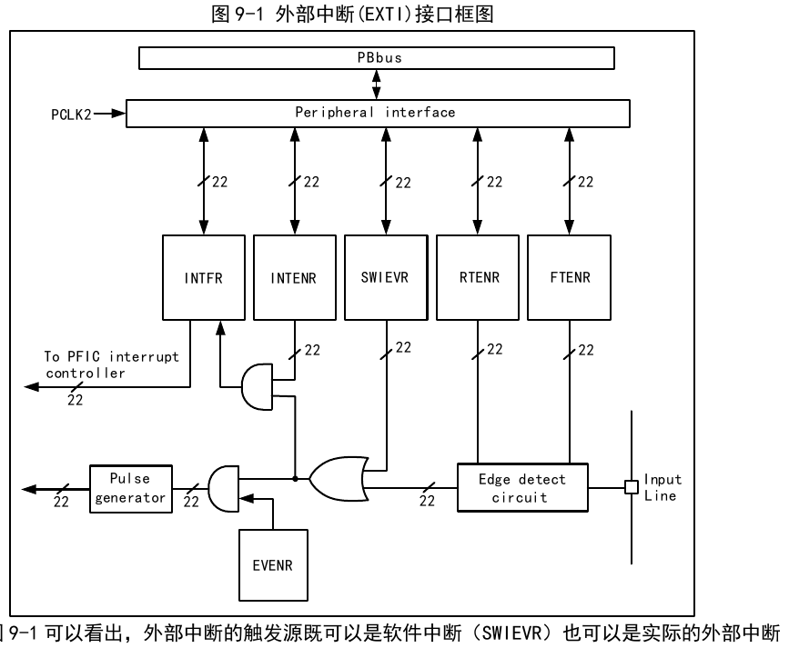

The CH32V407 uses the Qingke V3V core. RISC-V3V supports the IMACV-X instruction set, with an internal 2-3 stage pipeline and in-order execution architecture. The core supports the RISC-V V1.0 vector instruction set and the zvbb subset, with a maximum EEW width of 64 bits.
Internally, it is managed in a modular fashion, including a Fast Programmable Interrupt Controller (PFIC), memory protection, branch prediction mode, extended instruction support, and other units. Multiple sets of internal buses connect to external module units, enabling interaction between external functional modules and the core.
The Qingke V3V processor supports vector integer and fixed-point arithmetic instructions from the RISC-V V1.0 instruction set, but does not support vector floating-point instructions. Vector operations use 32 groups of 64-bit-wide vector registers, with a maximum vector instruction EEW of 64 bits. The configuration conforms to the vector embedded extension Zve64x extension set, supporting vector instruction encoding checks and instruction execution exception checks.
Vector operations use 32 groups of 64-bit-wide vector registers as operand registers, fully supporting the vector embedded extension Zve64x extension set.
zvbb is a basic operation subset of the vector instruction set extension. It fully supports the Zve64x extension set.
The custom delay instruction is a precise delay instruction at the cost of a single instruction overhead. It can delay a specified matching instruction precisely to clock cycle precision, avoiding the uncertainty of instruction jump execution in timer and delay operations. The instruction can automatically match instruction encoding, configure delay cycles and clock division coefficients, and is flexible to use, offering significant advantages in precise control, flow management, and low-overhead delay applications.
| Bits | Name | Description |
|---|---|---|
| [31:20] | imm | Delay immediate value. Depending on configuration, it represents the number of clock cycles or divided cycles to delay. |
| [19:15] | rs1 | Matching rs1 register encoding. |
| [14:12] | func3 | Fixed value 001b. |
| [11:9] | match | Matching instruction type. Instructions matching this type cannot execute while the delay is not complete. 000: Reserved; 001: Match load instruction; 010: Match store instruction; 011: Match load/store instruction; 100: Match delay instruction; 101: Reserved; 110: Match all instructions (pipeline stall); 111: Match instruction with specified func3 and opcode (match value configured by CSR register). |
| 8 | div | Clock selection for counting: 1: Use divided clock cycle count (division factor configured by CSR register); 0: Use main clock cycle count. |
| 7 | sel | Delay count selection: 1: rs1 + rs2; 0: rs1 + imm. |
| [6:0] | func7 | Fixed value 0001011b. |
The mcpy instruction is used to replace the memcpy function, implementing continuous memory copy functionality. The instruction registers hold the start address, target address, and end address information. All addresses have no alignment requirements.
| Bits | Name | Description |
|---|---|---|
| [31:27] | rs3 | End address register encoding. |
| [26:25] | Reserved | Fixed value 00b. |
| [24:20] | rs2 | Start address register encoding. |
| [19:15] | rs1 | Target address register encoding. |
| [14:12] | func3 | Fixed value 111b. |
| [11:7] | func5 | Fixed value 00000b. |
| [6:0] | func7 | Fixed value 0001111b. |
| Name | Access Address | Description | Reset Value |
|---|---|---|---|
| VXSAT | 0x009 | Fixed-point saturation status register | 0x00000000 |
| VXRM | 0x00A | Fixed-point rounding register | 0x00000000 |
| VCSR | 0x00F | Vector control and status register | 0x00000000 |
| VL | 0xC20 | Element body length register | 0x00000000 |
| VTYPE | 0xC21 | Vector data type register | 0x00000000 |
| VLENB | 0xC22 | Vector register byte length register | 0x00000000 |
| VCONTROL | 0x805 | Custom vector control register | 0x00000X0C |
| VPPADDR | 0x806 | Custom vector register stacking base address register | 0x00000000 |
| VCAUSE | 0x808 | Custom vector exception source register | 0x00000000 |
| VTVAL | 0x809 | Custom vector exception trap information register | 0x00000000 |
CSR address: 0x009
| Bits | Name | Access | Description | Reset |
|---|---|---|---|---|
| [31:1] | Reserved | URW | Reserved. | 0 |
| 0 | VXSAT | URW | Fixed-point saturation status register. Set to 1 when the fixed-point operation result must output a saturated value. | 0 |
CSR address: 0x00A
| Bits | Name | Access | Description | Reset |
|---|---|---|---|---|
| [31:2] | Reserved | URW | Reserved. | 0 |
| [1:0] | VXRM | URW | Fixed-point operation rounding register, used to control the rounding mode of fixed-point operations: 00: Round to nearest (round half up); 01: Round to nearest (round half to even); 10: Round down; 11: Round to odd. | 0 |
CSR address: 0x00F
| Bits | Name | Access | Description | Reset |
|---|---|---|---|---|
| [31:3] | Reserved | URW | Reserved. | 0 |
| [2:1] | VXRM | URW | Fixed-point operation rounding register, used to control the rounding mode of fixed-point operations: 00: Round to nearest (round half up); 01: Round to nearest (round half to even); 10: Round down; 11: Round to odd. | 0 |
| 0 | VXSAT | URW | Fixed-point saturation status register. Set to 1 when the fixed-point operation result must output a saturated value. | 0 |
CSR address: 0xC20
| Bits | Name | Access | Description | Reset |
|---|---|---|---|---|
| [31:7] | Reserved | URW | Reserved. | 0 |
| [6:0] | VL | URO | Vector body length register, used to store the element length used in operations. The register value can only be modified by vset instructions. For the assignment rules, see "RISC-V "V" Vector Extension 1.0" manual. | 0 |
CSR address: 0xC21
| Bits | Name | Access | Description | Reset |
|---|---|---|---|---|
| [31:6] | Reserved | URW | Reserved. | 0 |
| [5:3] | VSEW | URO | Vector width register, used to select the width of vectors and elements. Only VSET instruction can configure: 000: 8bit; 001: 16bit; 010: 32bit; 011: 64bit; 1xx: Reserved. Note: Configuring eew to 64bit requires enabling the VCONTROL related configuration. | 0 |
| [2:0] | VLMUL | URO | Vector group allocation register, used to select grouping information in vector operations. Only VSET instruction can configure: 000: 1; 001: 2; 010: 4; 011: 8; 100: Reserved; 101: 1/8; 110: 1/4; 111: 1/2. | 0 |
CSR address: 0xC22
| Bits | Name | Access | Description | Reset |
|---|---|---|---|---|
| [31:0] | VLENB | URO | Vector register group byte length register. This core has a vector register length of 64bit, byte length of 8, fixed value. | 0x8 |
CSR address: 0x805
| Bits | Name | Access | Description | Reset |
|---|---|---|---|---|
| 31 | VEC_ILL | URW1C | Vector instruction exception flag. Set when a vector instruction generates an exception. When the NMI_EN register is enabled, vector exceptions will enter NMI exception. | 0 |
| [30:24] | Reserved | URO | Reserved. | 0 |
| [23:22] | NEST_INT_PTR | URO | Interrupt nesting depth: 00: No interrupt; 01: Level 1 interrupt nesting; 10: Level 2 interrupt nesting; 11: Level 3 interrupt nesting. | 0 |
| [21:20] | VEC_INT_PTR | URW | Vector pipeline interrupt nesting depth: 00: No interrupt; 01: Level 1 interrupt nesting; 10: Level 2 interrupt nesting; 11: Level 3 interrupt nesting. When vector instructions are not used in the interrupt service function, the vector pipeline interrupt nesting depth retains its previous value. | 0 |
| [19:16] | VEC_REG_STATE | URW | Vector register state register. 4 bits correspond to a maximum of four levels of vector register state depth. A value of 1 indicates that the corresponding interrupt depth vector register state is dirty, meaning vector instructions have been executed causing vector register value changes. | 0 |
| [15:10] | Reserved | URO | Reserved. | 0 |
| 9 | VEC_ILL_INFO | URW | Vector exception information save enable. When set to 1, VCAUSE and VTVAL registers will save vector exception information. | 1 |
| 8 | Reserved | URO | Reserved, cannot write 0. | x |
| [7:4] | Reserved | URO | Reserved. | 0 |
| 3 | LSU_WAX_ON | URW | Force write ordering enable. Forces write operations to execute in instruction order. | 1 |
| 2 | LSU_RAW_ON | URW | Force read ordering enable. Forces read operations to execute in instruction order. | 1 |
| 1 | VEC_HW_PP_ABI | URW | Vector register hardware stack protection ABI configuration register: 1: Variant ABI call, hardware stack protects V0, V8-V23 registers; 0: Standard ABI call, hardware stack protects V0-V31 registers. Note: For ABI calls, refer to "RISC-V ABIS SPECIFICATION V1.1". | 0 |
| 0 | VEC_HW_PP_EN | URW | Vector register hardware stack protection enable: 1: Enable vector stack protection function; 0: Disable vector stack protection function. | 0 |
CSR address: 0x806
| Bits | Name | Access | Description | Reset |
|---|---|---|---|---|
| [31:0] | VPPADDR | URW | Vector register stack protection memory address register, used to configure the vector register stack protection address. The lower 10 bits are fixed to 0, 1KB aligned in memory. | 0x20000000 |
CSR address: 0x808
| Bits | Name | Access | Description | Reset |
|---|---|---|---|---|
| [31:0] | VCAUSE | URO | Vector instruction exception cause register. When VEC_ILL_INFO is enabled, it saves the exception cause of the vector exception. Note: Debug mode will cause exception cause information to be lost and cannot be used in debug mode. | 0 |
CSR address: 0x809
| Bits | Name | Access | Description | Reset |
|---|---|---|---|---|
| [31:0] | VTVAL | URO | Vector instruction trap information register. When VEC_ILL_INFO is enabled, it saves the PC value of the vector exception. Note: Debug mode will cause exception cause information to be lost and cannot be used in debug mode. | 0 |
In the RISC-V architecture, some Control and Status Registers (CSR) are defined for configuring, identifying, or recording running states. CSR registers belong to registers internal to the core and use a dedicated 12-bit address space.
| Name | CSR Address | Description | Reset Value |
|---|---|---|---|
| MVENDORID | 0xF11 | Chip manufacturer ID register | 0x00000000 |
| MARCHID | 0xF12 | Chip architecture ID register | 0xDC68D876 |
| MIMPID | 0xF13 | Core ID register | 0xDC688003 |
| MSTATUS | 0x300 | Machine status register | 0x00000000 |
| MISA | 0x301 | Machine instruction set register | 0x40B01107 |
| MTVEC | 0x305 | Machine mode exception base address register | 0x00000000 |
| MSCRATCH | 0x340 | Machine mode temporary register | X |
| MEPC | 0x341 | Machine exception program counter register | X |
| MCAUSE | 0x342 | Machine exception register | 0xX00000XX |
| MTVAL | 0x343 | Machine trap value register | X |
| TINFO | 0x7A4 | Trigger information register | 0x00000004 |
| DPC | 0x7B1 | Debug PC address register | X |
| DSCRATCH0 | 0x7B2 | Debug mode temporary register 0 | X |
| DSCRATCH1 | 0x7B3 | Debug mode temporary register 1 | X |
| DBGMCU_0 | 0x7C0 | Debug register 0 | 0x00000000 |
| UACCES_MSTATUS | 0x800 | User access machine status register | 0x00000000 |
| HW_POPDM_CTLR | 0x804 | Hardware stacking control register | 0x00000004 |
| TSELECT | 0x7A0 | Trigger channel selection register | 0x0000000X |
| TDATA1 | 0x7A1 | Trace trigger data register | 0x23E00048 |
| TDATA2 | 0x7A2 | Save trigger data register | X |
| MCOUNT_INHIBIT | 0x320 | Counter inhibit register | 0x00000000 |
| MCYCLE | 0xB00 | Machine cycle counter register | 0x00000000 |
| MINSTRET | 0xB02 | Machine instruction counter register | 0x00000000 |
| UCYCLE | 0xC00 | User mode cycle counter register | 0x00000000 |
| UINSTRET | 0xC02 | User mode instruction counter register | 0x00000000 |
CSR address: 0xF11
| Bits | Name | Access | Description | Reset |
|---|---|---|---|---|
| [31:0] | mvendorid[31:0] | MRO | Chip manufacturer ID, fixed value of 0. | 0 |
CSR address: 0xF12
| Bits | Name | Access | Description | Reset |
|---|---|---|---|---|
| [31:0] | marchid[31:0] | MRO | Chip architecture ID, fixed value, cannot be modified. | 0xDC68D876 |
CSR address: 0xF13
| Bits | Name | Access | Description | Reset |
|---|---|---|---|---|
| [31:0] | mimpid[31:0] | MRO | Machine implementation ID, fixed value, cannot be modified. | 0xDC688003 |
CSR address: 0x300
| Bits | Name | Access | Description | Reset |
|---|---|---|---|---|
| [31:13] | Reserved | MRO | Reserved. | 0 |
| [12:11] | MPP[1:0] | MRW | Saves/restores the machine state before entering an exception. Updated to the pre-exception machine state when entering an exception: 00: Machine state set to U mode on exception exit; 01: Reserved; 10: Reserved; 11: Machine state set to M mode on exception exit. | 0 |
| [10:9] | VS[1:0] | MRW | Vector instruction set state. When the value is not 0, vector instructions (V) are allowed to execute: 00: OFF; 01: Initial; 10: Clean; 11: Dirty. | 0 |
| 8 | Reserved | MRW | Reserved. | 0 |
| 7 | MPIE | MRW | Saves the interrupt enable state when entering an interrupt: 1: Enable global interrupt after exiting interrupt; 0: Disable global interrupt after exiting interrupt. | 0 |
| [6:4] | Reserved | MRO | Reserved. | 0 |
| 3 | MIE | MRW | Global interrupt enable. Updated to MPIE value on interrupt exit: 1: Global interrupt enabled, allows the processor to respond to interrupt requests; 0: Global interrupt disabled, processor does not respond to interrupt requests. | 0 |
| [2:0] | Reserved | MRO | Reserved. | 0 |
CSR address: 0x301
| Bits | Name | Access | Description | Reset |
|---|---|---|---|---|
| [31:30] | XLEN[1:0] | MRO | Machine basic integer width and basic instruction width information. 32-bit wide core, fixed value of 1. | 01b |
| [29:24] | Reserved | MRO | Reserved. | 0 |
| 23 | X | MRO | This core supports execution of custom instruction sets. | 1 |
| [22:21] | Reserved | MRO | Reserved. | 01b |
| 20 | U | MRO | Supports user mode operation. | 1 |
| [19:13] | Reserved | MRO | Reserved. | 0 |
| 12 | M | MRO | This core supports execution of the multiply instruction set. | 0 |
| [11:9] | Reserved | MRO | Reserved. | 0 |
| 8 | I | MRO | This core supports execution of the basic integer instruction set. | 1 |
| [7:6] | Reserved | MRO | Reserved. | 0 |
| 5 | F | MRO | This core supports execution of the single-precision floating-point instruction set. | 0 |
| [4:3] | Reserved | MRO | Reserved. | 0 |
| 2 | C | MRO | This core supports execution of the compressed instruction set. | 1 |
| 1 | B | MRO | This core supports execution of the bit manipulation instruction set. | 1 |
| 0 | A | MRO | This core supports execution of the atomic instruction set. | 1 |
CSR address: 0x305
| Bits | Name | Access | Description | Reset |
|---|---|---|---|---|
| [31:10] | mtvec_base[21:0] | MRW | Base address high bits for processor exception jump. 1KB aligned. The actual 32-bit base address BASE = {mtvec_base, 10'h0}. | 0 |
| [9:2] | Reserved | MRO | Reserved. | 0 |
| 1 | mode1 | RW | Vector table mode 1: 1: Interrupt vector table stores jump addresses; 0: Interrupt vector table stores jump instructions. | 0 |
| 0 | mode0 | RW | Vector table mode 0: 1: All interrupts/exceptions have independent entries, jump address is BASE+4*IRQ/EXC ID; 0: All interrupts/exceptions share a unified entry, all jump to the exception jump base address. | 0 |
CSR address: 0x340
| Bits | Name | Access | Description | Reset |
|---|---|---|---|---|
| [31:0] | mscratch[31:0] | MRW | Machine mode temporary register. | x |
CSR address: 0x341
| Bits | Name | Access | Description | Reset |
|---|---|---|---|---|
| [31:0] | mepc[31:0] | MRW | Saves the PC address to be restored when exiting interrupt/exception. mepc[0] is fixed to 0. | x |
CSR address: 0x342
| Bits | Name | Access | Description | Reset |
|---|---|---|---|---|
| 31 | Interrupt | RW | Interrupt/exception flag bit: 1: Exception/interrupt generated externally; 0: Exception/interrupt generated by the core. | x |
| [30:8] | Reserved | RO | Reserved. | 0 |
| [7:0] | Exception Code[7:0] | RW | Saves the source information of the exception or interrupt. | x |
| Interrupt/Exception | Exception Code | Interrupt/Exception Source |
|---|---|---|
| 1 | 2 | Reserved NMI |
| 1 | 3 | Machine mode software interrupt |
| 1 | 4 | User mode timer interrupt |
| 1 | 5 | Monitor mode timer interrupt |
| 1 | 6 | Reserved |
| 1 | 7 | Machine mode timer interrupt |
| 1 | 8 | User mode external interrupt |
| 1 | 11 | Machine mode external interrupt |
| 1 | 12 | System timer interrupt |
| 1 | ≥16 | Reserved platform interrupt ID |
| 0 | 0 | Instruction address misaligned |
| 0 | 1 | Instruction access fault |
| 0 | 2 | Illegal instruction |
| 0 | 3 | Breakpoint |
| 0 | 4 | Load address misaligned |
| 0 | 5 | Load access fault |
| 0 | 6 | Store/AMO address misaligned |
| 0 | 7 | Store/AMO access fault |
| 0 | 8 | User mode ecall |
| 0 | 11 | Machine mode ecall |
| 0 | ≥16 | Reserved |
CSR address: 0x343
| Bits | Name | Access | Description | Reset |
|---|---|---|---|---|
| [31:0] | mtval[31:0] | RW | Saves additional information for traps. | x |
| Exception Type | Mcause | Saved Information |
|---|---|---|
| Instruction address misaligned | 0 | Instruction PC |
| Instruction access fault | 1 | Instruction PC |
| Illegal instruction | 2 | Instruction machine code |
| Load address misaligned | 4 | Load data address |
| Load access fault | 5 | Load data address |
| Store/AMO access fault | 6 | Store data address |
| Store/AMO address misaligned | 7 | Store data address |
CSR address: 0x7A4
| Bits | Name | Access | Description | Reset |
|---|---|---|---|---|
| [31:0] | tinfo[31:0] | MRO | Trigger information register. Corresponds to the TDATA1 register type value. The type value is 2, so bit 2 of tinfo is set to 1. | 0x4 |
CSR address: 0x7B1
| Bits | Name | Access | Description | Reset |
|---|---|---|---|---|
| [31:0] | dpc[31:0] | RW | Saves the PC address to be restored when exiting debug mode. | x |
The addresses saved in dpc for different debug request sources that cause a jump to debug mode are as follows:
| Cause | Saved Address |
|---|---|
| ebreak | Address of the ebreak instruction. |
| Single step | Address of the next instruction that should be executed in non-debug mode. |
| Trigger module | tdata1.timing=0: Address of the instruction that triggered the breakpoint. |
| Halt request | Address of the next instruction that should be executed when entering debug mode. |
CSR address: 0x7B2
| Bits | Name | Access | Description | Reset |
|---|---|---|---|---|
| [31:0] | Dscratch0[31:0] | RW | Debug mode temporary register 0. | x |
CSR address: 0x7B3
| Bits | Name | Access | Description | Reset |
|---|---|---|---|---|
| [31:0] | Dscratch1[31:0] | RW | Debug mode temporary register 1. | x |
CSR address: 0x7C0
| Bits | Name | Access | Description | Reset |
|---|---|---|---|---|
| [31:8] | dbg_mode_stop | MRW | Registered module stops working when entering debug mode: 1: Registered peripherals stop working when the core enters debug mode; 0: Registered peripherals continue working normally when the core enters debug mode. | 0 |
| [7:0] | Reserved | MRO | Reserved. | 0 |
CSR address: 0x800
| Bits | Name | Access | Description | Reset |
|---|---|---|---|---|
| 31 | SD | RO | Used to mark whether floating-point instructions are in dirty state. | 0 |
| [30:15] | Reserved | RO | Reserved. | 0 |
| [14:13] | FS[1:0] | RO | Floating-point instruction set state. When the value is not 0, single-precision floating-point instructions (F) are allowed to execute: 00: OFF; 01: Initial; 10: Clean; 11: Dirty. | 0 |
| [12:11] | MPP[1:0] | RO | Saves/restores the machine state before entering an exception. Updated to the pre-exception machine state when entering an exception: 00: Machine state set to U mode on exception exit; 01: Reserved; 10: Reserved; 11: Machine state set to M mode on exception exit. | 0 |
| [10:8] | Reserved | RO | Reserved. | 0 |
| 7 | MPIE | RW | Saves the interrupt enable state when entering an interrupt: 1: Enable global interrupt after exiting interrupt; 0: Disable global interrupt after exiting interrupt. | 0 |
| [6:4] | Reserved | RO | Reserved. | 0 |
| 3 | MIE | RW | Global interrupt enable. Updated to MPIE value on interrupt exit: 1: Global interrupt enabled, allows the processor to respond to interrupt requests; 0: Global interrupt disabled, processor does not respond to interrupt requests. | 0 |
| [2:0] | Reserved | RO | Reserved. | 0 |
CSR address: 0x804
| Bits | Name | Access | Description | Reset |
|---|---|---|---|---|
| 31 | lock | RW | User mode lock flag. When locked, user mode cannot modify this group of register configurations: 1: Locked, only machine mode can configure; 0: Unlocked, both machine/user mode can configure. | 0 |
| [30:6] | Reserved | RO | Reserved. | 0 |
| 5 | hw_pop_off | RW | One-time hardware pop disable. Automatically reset after exiting interrupt: 1: Mask hardware pop on next interrupt exit; 0: Do not mask hardware pop. | 0 |
| 4 | Reserved | RO | Reserved. | 0 |
| [3:2] | preempt[1:0] | RW | Preemption priority width configuration register, used to configure the preemption priority width in interrupt priority: 00: Preemption width is 0, interrupts of any priority cannot nest; 01: Preemption width is 1, i.e. bit [7] of the interrupt priority register is the preemption priority; 10: Preemption width is 2, i.e. bits [7:6] of the interrupt priority register are the preemption priority; 11: Preemption width is 3, i.e. bits [7:5] of the interrupt priority register are the preemption priority. | 0x1 |
| 1 | nest_en | RW | Interrupt nesting enable register: 1: Allow interrupt nesting; 0: Do not allow interrupt nesting. | 0 |
| 0 | hw_stk_en | RW | Hardware stack protection enable: 1: Use hardware stack protection when entering/exiting interrupts; 0: Do not use hardware stack protection when entering/exiting interrupts. | 0 |
CSR address: 0x7A0
| Bits | Name | Access | Description | Reset |
|---|---|---|---|---|
| [31:2] | Reserved | MRO | Reserved. | 0 |
| [1:0] | mscratch[1:0] | MRW | Trigger channel selection register. | x |
CSR address: 0x7A1
| Bits | Name | Access | Description | Reset |
|---|---|---|---|---|
| [31:28] | type[3:0] | MRO | Trigger type definition. | 0x2 |
| 27 | dmode | MRO | Both machine mode and debug mode can modify trigger-related registers. | 0 |
| [26:21] | maskmax | MRO | Maximum range of matching exponent powers allowed when match=1. | 0x1F |
| [20:19] | Reserved | MRO | Reserved. | 0 |
| 18 | timing | MRO | Trigger before instruction/operation execution. | 0 |
| [17:13] | Reserved | MRO | Reserved. | 0 |
| 12 | action | MRW | Set the processing mode when triggered: 1: Enter debug mode on trigger, dpc saves the instruction address to be restored on debug exit; 0: Generate an exception that directs the thread to M mode on trigger. | 0 |
| [11:8] | Reserved | MRO | Reserved. | 0 |
| 7 | match | MRO | Match strategy configuration. Allows triggering when the comparison value equals the tdata2 value. | 0 |
| 6 | m | MRO | Trigger enable in M mode: 1: Enable; 0: Disable. | 1 |
| [5:4] | Reserved | MRO | Reserved. | 0 |
| 3 | u | MRO | Trigger enable in U mode: 1: Enable; 0: Disable. | 1 |
| 2 | execute | MRW | Trigger based on virtual address of executed instruction: 1: Trigger compares instruction address; 0: Trigger does not compare instruction address. | 0 |
| 1 | store | MRW | Trigger based on virtual address of store data: 1: Trigger compares store data address; 0: Trigger does not compare store data address. | 0 |
| 0 | load | MRW | Trigger based on virtual address of load data: 1: Trigger compares load data address; 0: Trigger does not compare load data address. | 0 |
CSR address: 0x7A2
| Bits | Name | Access | Description | Reset |
|---|---|---|---|---|
| [31:0] | tdata2[31:0] | MRW | Used to save trigger data (instruction PC or data address). | x |
CSR address: 0x320
| Bits | Name | Access | Description | Reset |
|---|---|---|---|---|
| [31:3] | Reserved | MRO | Reserved. | 0 |
| 2 | IR | MRW | Instruction counter inhibit register: 1: Inhibit instruction counter, MINSTRET and UNSTRET stop counting; 0: Do not inhibit instruction counter, MINSTRET and UNSTRET count normally. | 0 |
| 1 | Reserved | MRO | Reserved. | 0 |
| 0 | CY | MRW | Cycle counter inhibit register: 1: Inhibit cycle counter, MCYCLE and UCYCLE stop counting; 0: Do not inhibit cycle counter, MCYCLE and UCYCLE count normally. | 0 |
CSR address: 0xB00
| Bits | Name | Access | Description | Reset |
|---|---|---|---|---|
| [31:0] | MCYCLE | MRW | Machine cycle counter, used to count the clock cycles of machine operation. Counts when the MCOUNT_INHIBIT register CY bit is 0. Does not count when the counter is stopped in debug mode. | 0 |
CSR address: 0xB02
| Bits | Name | Access | Description | Reset |
|---|---|---|---|---|
| [31:0] | MINSTRET | MRW | Instruction counter, used to count the number of instructions correctly executed by the machine. Counts when the MCOUNT_INHIBIT register IR bit is 0. Does not count when the counter is stopped in debug mode. | 0 |
CSR address: 0xC00
| Bits | Name | Access | Description | Reset |
|---|---|---|---|---|
| [31:0] | UCYCLE | RO | User mode cycle counter, used to count the clock cycles of machine operation. Counts when the MCOUNT_INHIBIT register CY bit is 0. Does not count when the counter is stopped in debug mode. | 0 |
CSR address: 0xC02
| Bits | Name | Access | Description | Reset |
|---|---|---|---|---|
| [31:0] | UINSTRET | RO | Instruction counter, used to count the number of instructions correctly executed by the machine. Counts when the MCOUNT_INHIBIT register IR bit is 0. Does not count when the counter is stopped in debug mode. | 0 |
| Name | CSR Address | Description | Reset Value |
|---|---|---|---|
| CPU_RUN_CTLR | 0xBC0 | Processor run control register | 0x00000000 |
| INEST_CTLR | 0xBC1 | Interrupt nesting control register | 0x00000000 |
| MIE | 0xBC8 | Machine interrupt register | 0x00000000 |
| DCSR | 0x7B0 | Debug control and status register | 0x40000000 |
| U_NONS_DLY_0 | 0x8C0 | Delay instruction control register | 0xXXXX0XXX |
CSR address: 0xBC0
| Bits | Name | Access | Description | Reset |
|---|---|---|---|---|
| [31:8] | Reserved | MRO | Reserved. | 0 |
| 7 | nmi_ie | MRW | Non-maskable interrupt enable: 1: Enter NMI interrupt when an exception causes nesting overflow; 0: Do not enter NMI interrupt when an exception causes nesting overflow. | 0 |
| 6 | int_fence | MRW | Fence interrupt mask enable: 1: Clear interrupt request when executing fence instruction; 0: Do not clear interrupt request when executing fence instruction. | 0 |
| 5 | non_usta | MRW | UACCES_MSTATUS register enable: 1: Bit 3 and bit 7 of CSR address 0x800 are mapped to MSTATUS register bit MIE and MSTATUS register bit MPIE, respectively; 0: CSR address 0x800 is a read-only register, returning the value of MSTATUS. | 0 |
| [4:2] | Reserved | MRO | Reserved. | 0 |
| [1:0] | pipe_acc[1:0] | MRW | Fetch mode: 00: Prefetch disabled. Instruction prefetch function is off, avoiding invalid fetch operations. At most 1 valid instruction exists in the CPU pipeline. This mode has the lowest power consumption, with performance degradation of approximately 2-3x. 01: Prefetch enabled. Instruction prefetch function is on. The CPU will continuously access instruction memory until the number of instructions waiting for execution in the internal instruction buffer exceeds a certain amount, or the instruction buffer is full, then instruction fetching is paused. This mode has high power consumption and strong performance. (CPU prediction failure will introduce redundant fetch operations. In some cases, the execution unit will introduce an additional 0-2 cycles of bubble. Performance degradation is not significant for most programs.) Others: Reserved. | 0 |
CSR address: 0xBC1
| Bits | Name | Access | Description | Reset |
|---|---|---|---|---|
| 31 | Reserved | RO | Reserved. | 0 |
| 30 | nest_ovr | MRW | Interrupt/exception nesting overflow flag bit. Set to 1 when the nesting depth exceeds the maximum depth. Write 1 to clear. Note: Interrupt overflow only occurs when an instruction exception and NMI interrupt are generated during execution of a level 2 interrupt service function. In this case, the exception and NMI interrupt enter normally, but the CPU stack overflows and cannot exit from this exception and NMI interrupt. | 0 |
| [29:12] | Reserved | MRO | Reserved. | 0 |
| [11:8] | nest_sta[3:0] | MRO | Nesting status flag bits: 0000: No interrupt; 0001: Level 1 interrupt; 0011: Level 2 interrupt nesting; 0111: Level 3 interrupt nesting, overflow; Others: Reserved. | 0 |
| [7:2] | Reserved | MRO | Reserved. | 0 |
| [1:0] | nest_max[1:0] | MRW | Maximum nesting level: 00: Nesting disabled (nesting function off); 01: Level 2 nesting (nesting function on); 10: Cannot be written; 11: Cannot be written. Note: (1) Writing 10b or 11b to this field sets the register to 01b. (2) When writing 11b, reading this register returns the chip's maximum nesting level. | 0 |
CSR address: 0xBC8
| Bits | Name | Access | Description | Reset |
|---|---|---|---|---|
| [31:5] | Reserved | RO | Reserved. | 0 |
| [4:0] | nest_mie[4:0] | RW | Machine interrupt register. Saves the mie information for each interrupt level in multi-level interrupt nesting: status.mie=nest_mie[0]; status.mpie=nest_mie[1]. | 0 |
CSR address: 0x7B0
| Bits | Name | Access | Description | Reset |
|---|---|---|---|---|
| [31:28] | exdebug[3:0] | MRO | An external debugger conforming to the debugger protocol is present. | 0x4 |
| [27:16] | Reserved | MRO | Reserved. | 0 |
| 15 | ebreakm | MRW | Machine mode ebreak instruction enter debug mode enable: 1: When ebreak instruction is executed in machine mode, the processor enters debug mode; 0: When ebreak instruction is executed in machine mode, the processor enters exception. | 0 |
| [14:13] | Reserved | MRO | Reserved. | 0 |
| 12 | ebreaku | MRW | User mode ebreak instruction enter debug mode enable: 1: When ebreak instruction is executed in user mode, the processor enters debug mode; 0: When ebreak instruction is executed in user mode, the processor enters exception. | 0 |
| [11:10] | Reserved | MRO | Reserved. | 0 |
| 9 | stoptime | MRW | Timer pause enable: 1: Counter stops counting in debug mode; 0: Counter continues normally in debug mode. | 0 |
| [8:6] | dcause[2:0] | MRW | Debug source register, used to mark the specific event that caused entry into debug mode: 000: Reset value; 001: ebreak instruction in program triggered debug (priority 3); 010: Trigger module caused a breakpoint exception (priority 4); 011: Debugger generated halt request (priority 1); 100: Single-step mode halt (priority 0, lowest); 101: Not implemented; 110: Not implemented; 111: Reserved. | 0 |
| [5:4] | Reserved | MRO | Reserved. | 0 |
| 3 | nmip | MRO | Core NMI interrupt pending flag. | 0 |
| 2 | step | MRW | Single-step mode: 1: Single-step mode; 0: Non-single-step mode. | 0 |
| [1:0] | prv[1:0] | MRW | Records the machine state before entering debug mode: 00: Entered debug mode from user mode, processor restores to user mode; 01, 10: Reserved; 11: Entered debug mode from machine mode, processor restores to machine mode. | 0 |
CSR address: 0x8C0
| Bits | Name | Access | Description | Reset |
|---|---|---|---|---|
| [31:24] | dly_mask | URW | Instruction parameter mask for dly instruction match=111. | x |
| [23:16] | dly_data | URW | Matching {func, opcode} for dly instruction match=111. | x |
| 15 | CPU_dly_busy_sta | URO | Core delay state busy flag. | 0 |
| 14 | dly_tout | RW1Z | Timeout information. No matching instruction request within the delay range. | 0 |
| 13 | dly_ie | URW | Delay interrupt request. When enabled, if a timeout condition occurs, a software interrupt request is generated. | 0 |
| 12 | dly_priv | URW | 1: Both machine mode and user mode are allowed to match; 0: Delay operations executed in user mode do not match instructions in machine mode. | 0 |
| [11:10] | Reserved | URO | Reserved. | 0 |
| [9:0] | dly_freq | URW | Delay count division factor configuration. If configured to the main clock frequency, microsecond-based delay can be achieved. | x |
| Name | Access Address | Description | Reset Value |
|---|---|---|---|
| R32_STK_CTLR | 0xE000F000 | System counter control register | 0x00000000 |
| R32_STK_SR | 0xE000F004 | System counter status register | 0x00000000 |
| R32_STK_CNTL | 0xE000F008 | System counter low register | 0xXXXXXXXX |
| R32_STK_CMPLR | 0xE000F010 | Counter compare low register | 0xXXXXXXXX |
Offset address: 0x00
| 31 | 30 | 29 | 28 | 27 | 26 | 25 | 24 | 23 | 22 | 21 | 20 | 19 | 18 | 17 | 16 |
|---|---|---|---|---|---|---|---|---|---|---|---|---|---|---|---|
| Reserved | |||||||||||||||
| 15 | 14 | 13 | 12 | 11 | 10 | 9 | 8 | 7 | 6 | 5 | 4 | 3 | 2 | 1 | 0 |
|---|---|---|---|---|---|---|---|---|---|---|---|---|---|---|---|
| Reserved | INIT | MODE | STRE | STCLK | STIE | STE | |||||||||
| Bits | Name | Access | Description | Reset |
|---|---|---|---|---|
| [31:6] | Reserved | RO | Reserved. | 0 |
| 5 | INIT | RW1 | Counter initial value update: 1: When counting up, update to 0; when counting down, update to the compare value; 0: No effect. | 0 |
| 4 | MODE | RW | Count mode: 1: Count down; 0: Count up. | 0 |
| 3 | STRE | RW | Auto-reload count enable bit: 1: When counting up reaches the compare value, restart from 0; when counting down reaches 0, restart from the compare value; 0: Continue counting up/down. | 0 |
| 2 | STCLK | RW | Counter clock source selection bit: 1: HCLK as time base; 0: HCLK/8 as time base. | 0 |
| 1 | STIE | RW | Counter interrupt enable control bit: 1: Enable counter interrupt; 0: Disable counter interrupt. | 0 |
| 0 | STE | RW | System counter enable control bit: 1: Start system counter STK; 0: Disable system counter STK, counter stops counting. | 0 |
Offset address: 0x04
| 31 | 30 | 29 | 28 | 27 | 26 | 25 | 24 | 23 | 22 | 21 | 20 | 19 | 18 | 17 | 16 |
|---|---|---|---|---|---|---|---|---|---|---|---|---|---|---|---|
| SWIE | Reserved | ||||||||||||||
| 15 | 14 | 13 | 12 | 11 | 10 | 9 | 8 | 7 | 6 | 5 | 4 | 3 | 2 | 1 | 0 |
|---|---|---|---|---|---|---|---|---|---|---|---|---|---|---|---|
| Reserved | CNTIF | ||||||||||||||
| Bits | Name | Access | Description | Reset |
|---|---|---|---|---|
| 31 | SWIE | RW | Software interrupt trigger enable (SW): 1: Trigger software interrupt; 0: Disable trigger. Note: After entering software interrupt, this bit must be cleared to 0, otherwise it will keep triggering. | 0 |
| [30:1] | Reserved | RO | Reserved. | 0 |
| 0 | CNTIF | RW | Count value compare flag. Write 0 to clear, write 1 has no effect: 1: Counting up reached the compare value, or counting down reached 0; 0: Compare value not reached. | 0 |
Offset address: 0x08
| 31 | 30 | 29 | 28 | 27 | 26 | 25 | 24 | 23 | 22 | 21 | 20 | 19 | 18 | 17 | 16 |
|---|---|---|---|---|---|---|---|---|---|---|---|---|---|---|---|
| CNT[31:16] | |||||||||||||||
| 15 | 14 | 13 | 12 | 11 | 10 | 9 | 8 | 7 | 6 | 5 | 4 | 3 | 2 | 1 | 0 |
|---|---|---|---|---|---|---|---|---|---|---|---|---|---|---|---|
| CNT[15:0] | |||||||||||||||
| Bits | Name | Access | Description | Reset |
|---|---|---|---|---|
| [31:0] | CNT[31:0] | RW | Low 32 bits of the current counter value. | X |
Offset address: 0x10
| 31 | 30 | 29 | 28 | 27 | 26 | 25 | 24 | 23 | 22 | 21 | 20 | 19 | 18 | 17 | 16 |
|---|---|---|---|---|---|---|---|---|---|---|---|---|---|---|---|
| CMP[31:16] | |||||||||||||||
| 15 | 14 | 13 | 12 | 11 | 10 | 9 | 8 | 7 | 6 | 5 | 4 | 3 | 2 | 1 | 0 |
|---|---|---|---|---|---|---|---|---|---|---|---|---|---|---|---|
| CMP[15:0] | |||||||||||||||
| Bits | Name | Access | Description | Reset |
|---|---|---|---|---|
| [31:0] | CMP[31:0] | RW | Sets the low 32 bits of the compare counter value. When counting up, if the CMP register value equals the CNT counter value, or when counting down, if the CNT counter value reaches 0, an STK interrupt will be triggered. | X |
| Number | Priority | Type | Name | Description | Entry Address |
|---|---|---|---|---|---|
| 0 | -6 | Fixed | RESET | Reset interrupt | 0x00000000 |
| 1 | - | - | - | - | 0x00000004 |
| 2 | -5 | Fixed | NMI | Non-maskable interrupt | 0x00000008 |
| 3 | -4 | Fixed | HardFault | Exception interrupt | 0x0000000C |
| 4 | - | - | - | - | 0x00000010 |
| 5 | -3 | Fixed | Ecall-M | Machine mode ecall interrupt | 0x00000014 |
| 6-7 | - | - | - | - | 0x00000018-0x0000001C |
| 8 | -2 | Fixed | Ecall-U | User mode ecall interrupt | 0x00000020 |
| 9 | -1 | Fixed | BreakPoint | Breakpoint interrupt | 0x00000024 |
| 10-11 | - | - | - | - | 0x00000028-0x0000002C |
| 12 | 0 | Programmable | SysTick0 | System timer interrupt 0 | 0x00000030 |
| 13 | - | - | - | - | 0x00000034 |
| 14 | 1 | Programmable | SW | Software interrupt | 0x00000038 |
| 15 | - | - | - | - | 0x0000003C |
| 16 | 2 | Programmable | WWDG | Window watchdog interrupt | 0x00000040 |
| 17 | 3 | Programmable | PVD | Power voltage detector interrupt (EXTI) | 0x00000044 |
| 18 | 4 | Programmable | TAMPER | Tamper detection interrupt | 0x00000048 |
| 19 | 5 | Programmable | RTC | Real-time clock interrupt | 0x0000004C |
| 20 | 6 | Programmable | FLASH | Flash global interrupt | 0x00000050 |
| 21 | 7 | Programmable | RCC | Reset and clock control interrupt | 0x00000054 |
| 22 | 8 | Programmable | EXTI0 | EXTI line 0 interrupt | 0x00000058 |
| 23 | 9 | Programmable | EXTI1 | EXTI line 1 interrupt | 0x0000005C |
| 24 | 10 | Programmable | EXTI2 | EXTI line 2 interrupt | 0x00000060 |
| 25 | 11 | Programmable | EXTI3 | EXTI line 3 interrupt | 0x00000064 |
| 26 | 12 | Programmable | EXTI4 | EXTI line 4 interrupt | 0x0000006C |
| 27 | 13 | Programmable | DMA1_CH1 | DMA channel 1 global interrupt | 0x00000070 |
| 28 | 14 | Programmable | DMA1_CH2 | DMA channel 2 global interrupt | 0x00000074 |
| 29 | 15 | Programmable | DMA1_CH3 | DMA channel 3 global interrupt | 0x00000078 |
| 30 | 16 | Programmable | DMA1_CH4 | DMA channel 4 global interrupt | 0x0000007C |
| 31 | 17 | Programmable | DMA1_CH5 | DMA channel 5 global interrupt | 0x00000080 |
| 32 | 18 | Programmable | DMA1_CH6 | DMA channel 6 global interrupt | 0x00000084 |
| 33 | 19 | Programmable | DMA1_CH7 | DMA channel 7 global interrupt | 0x00000088 |
| 34 | 20 | Programmable | ADC1_2 | ADC1_2 global interrupt | 0x0000008C |
| 35 | 21 | Programmable | CAN1_TX | CAN1_TX global interrupt | 0x00000090 |
| 36 | 22 | Programmable | CAN1_RX0 | CAN1_RX0 global interrupt | 0x00000094 |
| 37 | 23 | Programmable | CAN1_RX1 | CAN1_RX1 global interrupt | 0x00000098 |
| 38 | 24 | Programmable | CAN1_SCE | CAN1_SCE global interrupt | 0x0000009C |
| 39 | 25 | Programmable | EXTI9_5 | EXTI line[9:5] interrupt | 0x000000A0 |
| 40 | 26 | Programmable | TIM1_BRK | TIM1 break interrupt | 0x000000A4 |
| 41 | 27 | Programmable | TIM1_UP | TIM1 update interrupt | 0x000000A8 |
| 42 | 28 | Programmable | TIM1_TRG_COM | TIM1 trigger and communication interrupt | 0x000000AC |
| 43 | 29 | Programmable | TIM1_CC | TIM1 capture/compare interrupt | 0x000000B0 |
| 44 | 30 | Programmable | TIM2 | TIM2 global interrupt | 0x000000B4 |
| 45 | 31 | Programmable | TIM3 | TIM3 global interrupt | 0x000000B8 |
| 46 | 32 | Programmable | TIM4 | TIM4 global interrupt | 0x000000BC |
| 47 | 33 | Programmable | I2C_EV | I2C event interrupt | 0x000000C0 |
| 48 | 34 | Programmable | I2C_ER | I2C error interrupt | 0x000000C4 |
| 49 | 35 | Programmable | I3C_EV | I3C event interrupt | 0x000000C8 |
| 50 | 36 | Programmable | I3C_ER | I3C error interrupt | 0x000000CC |
| 51 | 37 | Programmable | SPI1 | SPI1 global interrupt | 0x000000D0 |
| 52 | 38 | Programmable | SPI2 | SPI2 global interrupt | 0x000000D4 |
| 53 | 39 | Programmable | USART1 | USART1 global interrupt | 0x000000D8 |
| 54 | 40 | Programmable | USART2 | USART2 global interrupt | 0x000000DC |
| 55 | 41 | Programmable | USART3 | USART3 global interrupt | 0x000000E0 |
| 56 | 42 | Programmable | EXTI15_10 | EXTI line[15:10] interrupt | 0x000000E4 |
| 57 | 43 | Programmable | RTCAlarm | RTC alarm interrupt (EXTI) | 0x000000E8 |
| 58 | 44 | Programmable | USBHS1WakeUP | USBHS1 wake-up interrupt | 0x000000EC |
| 59 | 45 | Programmable | TIM8_BRK | TIM8 break interrupt | 0x000000F0 |
| 60 | 46 | Programmable | TIM8_UP | TIM8 update interrupt | 0x000000F4 |
| 61 | 47 | Programmable | TIM8_TRG_COM | TIM8 trigger and communication interrupt | 0x000000F8 |
| 62 | 48 | Programmable | TIM8_CC | TIM8 capture/compare interrupt | 0x000000FC |
| 63 | 49 | Programmable | RNG | RNG global interrupt | 0x00000100 |
| 64 | - | - | - | - | 0x00000104 |
| 65 | 50 | Programmable | SDIO | SDIO global interrupt | 0x00000108 |
| 66 | 51 | Programmable | TIM5 | TIM5 global interrupt | 0x0000010C |
| 67 | 52 | Programmable | SPI3 | SPI3 global interrupt | 0x00000110 |
| 68 | 53 | Programmable | USART4 | USART4 global interrupt | 0x00000114 |
| 69 | 54 | Programmable | USART5 | USART5 global interrupt | 0x00000118 |
| 70 | 55 | Programmable | TIM6 | TIM6 global interrupt | 0x0000011C |
| 71 | 56 | Programmable | TIM7 | TIM7 global interrupt | 0x00000120 |
| 72 | 57 | Programmable | DMA2_CH1 | DMA2 channel 1 global interrupt | 0x00000124 |
| 73 | 58 | Programmable | DMA2_CH2 | DMA2 channel 2 global interrupt | 0x00000128 |
| 74 | 59 | Programmable | DMA2_CH3 | DMA2 channel 3 global interrupt | 0x0000012C |
| 75 | 60 | Programmable | DMA2_CH4 | DMA2 channel 4 global interrupt | 0x00000130 |
| 76 | 61 | Programmable | DMA2_CH5 | DMA2 channel 5 global interrupt | 0x00000134 |
| 77 | 62 | Programmable | ETH | ETH global interrupt | 0x00000138 |
| 78 | 63 | Programmable | ETH_WKUP | ETH wake-up interrupt | 0x0000013C |
| 79 | 64 | Programmable | LTDC | LTDC global interrupt | 0x00000140 |
| 80 | 65 | Programmable | PSRAM | PSRAM global interrupt | 0x00000144 |
| 81 | 66 | Programmable | USART9 | USART9 global interrupt | 0x00000148 |
| 82 | 67 | Programmable | USART10 | USART10 global interrupt | 0x0000014C |
| 83 | 68 | Programmable | USBHS1 | USBHS1 global interrupt | 0x00000150 |
| 84 | 69 | Programmable | USBHS2WakeUP | USBHS2 wake-up interrupt | 0x00000154 |
| 85 | 70 | Programmable | USBHS2 | USBHS2 global interrupt | 0x00000158 |
| 86 | 71 | Programmable | DVP | DVP global interrupt | 0x0000015C |
| 87 | 72 | Programmable | USART6 | USART6 global interrupt | 0x00000160 |
| 88 | 73 | Programmable | USART7 | USART7 global interrupt | 0x00000164 |
| 89 | 74 | Programmable | USART8 | USART8 global interrupt | 0x00000168 |
| 90 | 75 | Programmable | DMA1_CH8 | DMA1 channel 8 global interrupt | 0x0000016C |
| 91 | 76 | Programmable | DMA1_CH9 | DMA1 channel 9 global interrupt | 0x00000170 |
| 92 | 77 | Programmable | DMA1_CH10 | DMA1 channel 10 global interrupt | 0x00000174 |
| 93 | 78 | Programmable | DMA1_CH11 | DMA1 channel 11 global interrupt | 0x00000178 |
| 94 | 79 | Programmable | DMA1_CH12 | DMA1 channel 12 global interrupt | 0x0000017C |
| 95 | 80 | Programmable | DMA1_CH13 | DMA1 channel 13 global interrupt | 0x00000180 |
| 96 | 81 | Programmable | I3CWakeUP | I3C wake-up interrupt | 0x00000184 |
| 97 | 82 | Programmable | ARGB | ARGB global interrupt | 0x00000188 |
| 98 | 83 | Programmable | DMA2_CH6 | DMA2 channel 6 global interrupt | 0x0000018C |
| 99 | 84 | Programmable | DMA2_CH7 | DMA2 channel 7 global interrupt | 0x00000190 |
| 100 | 85 | Programmable | DMA2_CH8 | DMA2 channel 8 global interrupt | 0x00000194 |
| 101 | 86 | Programmable | DMA2_CH9 | DMA2 channel 9 global interrupt | 0x00000198 |
| 102 | 87 | Programmable | DMA2_CH10 | DMA2 channel 10 global interrupt | 0x0000019C |
| 103 | 88 | Programmable | DMA2_CH11 | DMA2 channel 11 global interrupt | 0x000001A0 |

As shown in Figure 9-1, the trigger source of an external interrupt can be either a software interrupt (SWIEVR) or an actual external interrupt channel. The signal of the external interrupt channel first passes through the edge detect circuit for filtering. As long as either a software interrupt or an external interrupt signal is generated, it will be output through the OR gate in the diagram to the event enable and interrupt enable AND gate circuits. As long as an interrupt or event is enabled, an interrupt or event will be generated. The six EXTI registers are accessed by the processor through the PB2 interface.
The system can be woken up from sleep mode caused by the WFE instruction through wake-up events. Wake-up events are generated through the following two configurations:
To use external interrupts, the corresponding external interrupt channel must be configured, i.e., select the trigger edge and enable the corresponding interrupt. When the configured trigger edge appears on the external interrupt channel, an interrupt request will be generated, and the corresponding interrupt flag bit will be set. Writing 1 to the flag bit can clear it.
Steps for using external hardware interrupts:
Steps for using external hardware events:
Steps for using software interrupt/event:
| External Interrupt/Event Line | Mapped Event Description |
|---|---|
| EXTI0-EXTI15 | Px0-Px15 (x=A/B/C/D/E). Any IO port can enable the external interrupt/event function, configured by the AFIO_EXTICRx register. |
| EXTI16 | PVD event: voltage monitoring threshold exceeded |
| EXTI17 | RTC alarm event |
| EXTI18 | USBHS1 wake-up event |
| EXTI19 | ETH wake-up event |
| EXTI20 | USBHS2 wake-up event |
| EXTI21 | I3C wake-up event |
| Name | Access Address | Description | Reset Value |
|---|---|---|---|
| R32_EXTI_INTENR | 0x40010400 | Interrupt enable register | 0x00000000 |
| R32_EXTI_EVENR | 0x40010404 | Event enable register | 0x00000000 |
| R32_EXTI_RTENR | 0x40010408 | Rising edge trigger enable register | 0x00000000 |
| R32_EXTI_FTENR | 0x4001040C | Falling edge trigger enable register | 0x00000000 |
| R32_EXTI_SWIEVR | 0x40010410 | Software interrupt event register | 0x00000000 |
| R32_EXTI_INTFR | 0x40010414 | Interrupt flag register | 0x0000XXXX |
Offset address: 0x00
| 31 | 30 | 29 | 28 | 27 | 26 | 25 | 24 | 23 | 22 | 21 | 20 | 19 | 18 | 17 | 16 |
|---|---|---|---|---|---|---|---|---|---|---|---|---|---|---|---|
| Reserved | MR21 | MR20 | MR19 | MR18 | MR17 | MR16 | |||||||||
| 15 | 14 | 13 | 12 | 11 | 10 | 9 | 8 | 7 | 6 | 5 | 4 | 3 | 2 | 1 | 0 |
|---|---|---|---|---|---|---|---|---|---|---|---|---|---|---|---|
| MR15 | MR14 | MR13 | MR12 | MR11 | MR10 | MR9 | MR8 | MR7 | MR6 | MR5 | MR4 | MR3 | MR2 | MR1 | MR0 |
| Bits | Name | Access | Description | Reset |
|---|---|---|---|---|
| [31:22] | Reserved | RO | Reserved. | 0 |
| [21:0] | MRx | RW | Enable the interrupt request signal of external interrupt channel x: 1: Enable the interrupt of this channel; 0: Mask the interrupt of this channel. | 0 |
Offset address: 0x04
| 31 | 30 | 29 | 28 | 27 | 26 | 25 | 24 | 23 | 22 | 21 | 20 | 19 | 18 | 17 | 16 |
|---|---|---|---|---|---|---|---|---|---|---|---|---|---|---|---|
| Reserved | MR21 | MR20 | MR19 | MR18 | MR17 | MR16 | |||||||||
| 15 | 14 | 13 | 12 | 11 | 10 | 9 | 8 | 7 | 6 | 5 | 4 | 3 | 2 | 1 | 0 |
|---|---|---|---|---|---|---|---|---|---|---|---|---|---|---|---|
| MR15 | MR14 | MR13 | MR12 | MR11 | MR10 | MR9 | MR8 | MR7 | MR6 | MR5 | MR4 | MR3 | MR2 | MR1 | MR0 |
| Bits | Name | Access | Description | Reset |
|---|---|---|---|---|
| [31:22] | Reserved | RO | Reserved. | 0 |
| [21:0] | MRx | RW | Enable the event request signal of external interrupt channel x: 1: Enable the event of this channel; 0: Mask the event of this channel. | 0 |
Offset address: 0x08
| 31 | 30 | 29 | 28 | 27 | 26 | 25 | 24 | 23 | 22 | 21 | 20 | 19 | 18 | 17 | 16 |
|---|---|---|---|---|---|---|---|---|---|---|---|---|---|---|---|
| Reserved | TR21 | TR20 | TR19 | TR18 | TR17 | TR16 | |||||||||
| 15 | 14 | 13 | 12 | 11 | 10 | 9 | 8 | 7 | 6 | 5 | 4 | 3 | 2 | 1 | 0 |
|---|---|---|---|---|---|---|---|---|---|---|---|---|---|---|---|
| TR15 | TR14 | TR13 | TR12 | TR11 | TR10 | TR9 | TR8 | TR7 | TR6 | TR5 | TR4 | TR3 | TR2 | TR1 | TR0 |
| Bits | Name | Access | Description | Reset |
|---|---|---|---|---|
| [31:22] | Reserved | RO | Reserved. | 0 |
| [21:0] | TRx | RW | Enable rising edge trigger of external interrupt channel x: 1: Enable rising edge trigger of this channel; 0: Disable rising edge trigger of this channel. | 0 |
Offset address: 0x0C
| 31 | 30 | 29 | 28 | 27 | 26 | 25 | 24 | 23 | 22 | 21 | 20 | 19 | 18 | 17 | 16 |
|---|---|---|---|---|---|---|---|---|---|---|---|---|---|---|---|
| Reserved | TR21 | TR20 | TR19 | TR18 | TR17 | TR16 | |||||||||
| 15 | 14 | 13 | 12 | 11 | 10 | 9 | 8 | 7 | 6 | 5 | 4 | 3 | 2 | 1 | 0 |
|---|---|---|---|---|---|---|---|---|---|---|---|---|---|---|---|
| TR15 | TR14 | TR13 | TR12 | TR11 | TR10 | TR9 | TR8 | TR7 | TR6 | TR5 | TR4 | TR3 | TR2 | TR1 | TR0 |
| Bits | Name | Access | Description | Reset |
|---|---|---|---|---|
| [31:22] | Reserved | RO | Reserved. | 0 |
| [21:0] | TRx | RW | Enable falling edge trigger of external interrupt channel x: 1: Enable falling edge trigger of this channel; 0: Disable falling edge trigger of this channel. | 0 |
Offset address: 0x10
| 31 | 30 | 29 | 28 | 27 | 26 | 25 | 24 | 23 | 22 | 21 | 20 | 19 | 18 | 17 | 16 |
|---|---|---|---|---|---|---|---|---|---|---|---|---|---|---|---|
| Reserved | SWIER21 | SWIER20 | SWIER19 | SWIER18 | SWIER17 | SWIER16 | |||||||||
| 15 | 14 | 13 | 12 | 11 | 10 | 9 | 8 | 7 | 6 | 5 | 4 | 3 | 2 | 1 | 0 |
|---|---|---|---|---|---|---|---|---|---|---|---|---|---|---|---|
| SWIER15 | SWIER14 | SWIER13 | SWIER12 | SWIER11 | SWIER10 | SWIER9 | SWIER8 | SWIER7 | SWIER6 | SWIER5 | SWIER4 | SWIER3 | SWIER2 | SWIER1 | SWIER0 |
| Bits | Name | Access | Description | Reset |
|---|---|---|---|---|
| [31:22] | Reserved | RO | Reserved. | 0 |
| [21:0] | SWIERx | RW | Set a software interrupt on the corresponding external trigger interrupt channel. Setting this bit will set the corresponding bit in the interrupt flag register (EXTI_INTFR). If interrupt enable (EXTI_INTENR) or event enable (EXTI_EVENR) is on, an interrupt or event will be generated. | 0 |
Offset address: 0x14
| 31 | 30 | 29 | 28 | 27 | 26 | 25 | 24 | 23 | 22 | 21 | 20 | 19 | 18 | 17 | 16 |
|---|---|---|---|---|---|---|---|---|---|---|---|---|---|---|---|
| Reserved | IF21 | IF20 | IF19 | IF18 | IF17 | IF16 | |||||||||
| 15 | 14 | 13 | 12 | 11 | 10 | 9 | 8 | 7 | 6 | 5 | 4 | 3 | 2 | 1 | 0 |
|---|---|---|---|---|---|---|---|---|---|---|---|---|---|---|---|
| IF15 | IF14 | IF13 | IF12 | IF11 | IF10 | IF9 | IF8 | IF7 | IF6 | IF5 | IF4 | IF3 | IF2 | IF1 | IF0 |
| Bits | Name | Access | Description | Reset |
|---|---|---|---|---|
| [31:22] | Reserved | RO | Reserved. | 0 |
| [21:0] | IFx | RW1 | Interrupt flag bit. This bit being set indicates that the corresponding external interrupt has occurred. Writing 1 can clear this bit. | 0 |
| Name | Access Address | Description | Reset Value |
|---|---|---|---|
| R32_PFIC_ISR1 | 0xE000E000 | PFIC interrupt enable status register 1 | 0x0000032C |
| R32_PFIC_ISR2 | 0xE000E004 | PFIC interrupt enable status register 2 | 0x00000000 |
| R32_PFIC_ISR3 | 0xE000E008 | PFIC interrupt enable status register 3 | 0x00000000 |
| R32_PFIC_ISR4 | 0xE000E00C | PFIC interrupt enable status register 4 | 0x00000000 |
| R32_PFIC_IPR1 | 0xE000E020 | PFIC interrupt pending status register 1 | 0x00000000 |
| R32_PFIC_IPR2 | 0xE000E024 | PFIC interrupt pending status register 2 | 0x00000000 |
| R32_PFIC_IPR3 | 0xE000E028 | PFIC interrupt pending status register 3 | 0x00000000 |
| R32_PFIC_IPR4 | 0xE000E02C | PFIC interrupt pending status register 4 | 0x00000000 |
| R32_PFIC_ITHRESDR | 0xE000E040 | PFIC interrupt priority threshold configuration register | 0x00000000 |
| R32_PFIC_CFGR | 0xE000E048 | PFIC interrupt configuration register | 0x00000000 |
| R32_PFIC_GISR | 0xE000E04C | PFIC interrupt global status register | 0x00000000 |
| R32_PFIC_VTFIDR | 0xE000E050 | PFIC VTF interrupt ID configuration register | 0xXXXXXXXX |
| R32_PFIC_VTFADDRR0 | 0xE000E060 | PFIC VTF interrupt 0 offset address register | 0xXXXXXXXX |
| R32_PFIC_VTFADDRR1 | 0xE000E064 | PFIC VTF interrupt 1 offset address register | 0xXXXXXXXX |
| R32_PFIC_VTFADDRR2 | 0xE000E068 | PFIC VTF interrupt 2 offset address register | 0xXXXXXXXX |
| R32_PFIC_VTFADDRR3 | 0xE000E06C | PFIC VTF interrupt 3 offset address register | 0xXXXXXXXX |
| R32_PFIC_IENR1 | 0xE000E100 | PFIC interrupt enable set register 1 | 0x00000000 |
| R32_PFIC_IENR2 | 0xE000E104 | PFIC interrupt enable set register 2 | 0x00000000 |
| R32_PFIC_IENR3 | 0xE000E108 | PFIC interrupt enable set register 3 | 0x00000000 |
| R32_PFIC_IENR4 | 0xE000E10C | PFIC interrupt enable set register 4 | 0x00000000 |
| R32_PFIC_IRER1 | 0xE000E180 | PFIC interrupt enable clear register 1 | 0x00000000 |
| R32_PFIC_IRER2 | 0xE000E184 | PFIC interrupt enable clear register 2 | 0x00000000 |
| R32_PFIC_IRER3 | 0xE000E188 | PFIC interrupt enable clear register 3 | 0x00000000 |
| R32_PFIC_IRER4 | 0xE000E18C | PFIC interrupt enable clear register 4 | 0x00000000 |
| R32_PFIC_IPSR1 | 0xE000E200 | PFIC interrupt pending set register 1 | 0x00000000 |
| R32_PFIC_IPSR2 | 0xE000E204 | PFIC interrupt pending set register 2 | 0x00000000 |
| R32_PFIC_IPSR3 | 0xE000E208 | PFIC interrupt pending set register 3 | 0x00000000 |
| R32_PFIC_IPSR4 | 0xE000E20C | PFIC interrupt pending set register 4 | 0x00000000 |
| R32_PFIC_IPRR1 | 0xE000E280 | PFIC interrupt pending clear register 1 | 0x00000000 |
| R32_PFIC_IPRR2 | 0xE000E284 | PFIC interrupt pending clear register 2 | 0x00000000 |
| R32_PFIC_IPRR3 | 0xE000E288 | PFIC interrupt pending clear register 3 | 0x00000000 |
| R32_PFIC_IPRR4 | 0xE000E28C | PFIC interrupt pending clear register 4 | 0x00000000 |
| R32_PFIC_IACTR1 | 0xE000E300 | PFIC interrupt active status register 1 | 0x00000000 |
| R32_PFIC_IACTR2 | 0xE000E304 | PFIC interrupt active status register 2 | 0x00000000 |
| R32_PFIC_IACTR3 | 0xE000E308 | PFIC interrupt active status register 3 | 0x00000000 |
| R32_PFIC_IACTR4 | 0xE000E30C | PFIC interrupt active status register 4 | 0x00000000 |
| R32_PFIC_IPRIORx | 0xE000E400 | PFIC interrupt priority configuration register | 0x00000000 |
| R32_PFIC_WAKEIP0 | 0xE000E720 | PFIC wake-up instruction pointer register 0 | 0x00000001 |
| R32_PFIC_CSTAR0 | 0xE000E780 | PFIC core status register 0 | 0x00000000 |
| R32_PFIC_EENR | 0xE000EC80 | PFIC event enable register | 0xFFFFFFFF |
| R32_PFIC_EPR | 0xE000EC84 | PFIC event pending register | 0x00000000 |
| R32_PFIC_EWUPR | 0xE000EC88 | PFIC event wake-up register | 0x00000000 |
| R32_PFIC_SCTLR | 0xE000ED10 | PFIC system control register | 0x00000000 |
Offset address: 0x00
| 31 | 30 | 29 | 28 | 27 | 26 | 25 | 24 | 23 | 22 | 21 | 20 | 19 | 18 | 17 | 16 |
|---|---|---|---|---|---|---|---|---|---|---|---|---|---|---|---|
| INTENSTA[31:16] | |||||||||||||||
| 15 | 14 | 13 | 12 | 11 | 10 | 9 | 8 | 7 | 6 | 5 | 4 | 3 | 2 | 1 | 0 |
|---|---|---|---|---|---|---|---|---|---|---|---|---|---|---|---|
| Reserved | INTENSTA14 | Reserved | INTENSTA12 | Reserved | INTENSTA9 | INTENSTA8 | Reserved | INTENSTA5 | Reserved | INTENSTA3 | INTENSTA2 | Reserved | |||
| Bits | Name | Access | Description | Reset |
|---|---|---|---|---|
| [31:16] | INTENSTA | RO | Current enable status of interrupt #16-#31. 1: The interrupt of the current number is enabled; 0: The interrupt of the current number is not enabled. | 0 |
| 15 | Reserved | RO | Reserved. | 0 |
| 14 | INTENSTA | RO | Current enable status of interrupt #14. 1: The interrupt of the current number is enabled; 0: The interrupt of the current number is not enabled. | 0 |
| 13 | Reserved | RO | Reserved. | 0 |
| 12 | INTENSTA | RO | Current enable status of interrupt #12. 1: The interrupt of the current number is enabled; 0: The interrupt of the current number is not enabled. | 0 |
| [11:10] | Reserved | RO | Reserved. | 0 |
| [9:8] | INTENSTA | RO | Current enable status of interrupt #8-#9. 1: The interrupt of the current number is enabled; 0: The interrupt of the current number is not enabled. | 0x3 |
| [7:6] | Reserved | RO | Reserved. | 0 |
| 5 | INTENSTA | RO | Current enable status of interrupt #5. 1: The interrupt of the current number is enabled; 0: The interrupt of the current number is not enabled. | 1 |
| 4 | Reserved | RO | Reserved. | 0 |
| [3:2] | INTENSTA | RO | Current enable status of interrupt #2-#3. 1: The interrupt of the current number is enabled; 0: The interrupt of the current number is not enabled. | 0x3 |
| [1:0] | Reserved | RO | Reserved. | 0 |
Offset address: 0x04
| 31 | 30 | 29 | 28 | 27 | 26 | 25 | 24 | 23 | 22 | 21 | 20 | 19 | 18 | 17 | 16 |
|---|---|---|---|---|---|---|---|---|---|---|---|---|---|---|---|
| INTENSTA[63:48] | |||||||||||||||
| 15 | 14 | 13 | 12 | 11 | 10 | 9 | 8 | 7 | 6 | 5 | 4 | 3 | 2 | 1 | 0 |
|---|---|---|---|---|---|---|---|---|---|---|---|---|---|---|---|
| INTENSTA[47:32] | |||||||||||||||
| Bits | Name | Access | Description | Reset |
|---|---|---|---|---|
| [31:0] | INTENSTA | RO | Current enable status of interrupt #32-#63. 1: The interrupt of the current number is enabled; 0: The interrupt of the current number is not enabled. | 0 |
Offset address: 0x08
| 31 | 30 | 29 | 28 | 27 | 26 | 25 | 24 | 23 | 22 | 21 | 20 | 19 | 18 | 17 | 16 |
|---|---|---|---|---|---|---|---|---|---|---|---|---|---|---|---|
| INTENSTA[95:80] | |||||||||||||||
| 15 | 14 | 13 | 12 | 11 | 10 | 9 | 8 | 7 | 6 | 5 | 4 | 3 | 2 | 1 | 0 |
|---|---|---|---|---|---|---|---|---|---|---|---|---|---|---|---|
| INTENSTA[79:64] | |||||||||||||||
| Bits | Name | Access | Description | Reset |
|---|---|---|---|---|
| [31:0] | INTENSTA | RO | Current enable status of interrupt #64-#95. 1: The interrupt of the current number is enabled; 0: The interrupt of the current number is not enabled. | 0 |
Offset address: 0x0C
| 31 | 30 | 29 | 28 | 27 | 26 | 25 | 24 | 23 | 22 | 21 | 20 | 19 | 18 | 17 | 16 |
|---|---|---|---|---|---|---|---|---|---|---|---|---|---|---|---|
| Reserved | |||||||||||||||
| 15 | 14 | 13 | 12 | 11 | 10 | 9 | 8 | 7 | 6 | 5 | 4 | 3 | 2 | 1 | 0 |
|---|---|---|---|---|---|---|---|---|---|---|---|---|---|---|---|
| Reserved | INTENSTA[103:96] | ||||||||||||||
| Bits | Name | Access | Description | Reset |
|---|---|---|---|---|
| [31:8] | Reserved | RO | Reserved. | 0 |
| [7:0] | INTENSTA | RO | Current enable status of interrupt #96-#103. 1: The interrupt of the current number is enabled; 0: The interrupt of the current number is not enabled. | 0 |
Offset address: 0x20
| 31 | 30 | 29 | 28 | 27 | 26 | 25 | 24 | 23 | 22 | 21 | 20 | 19 | 18 | 17 | 16 |
|---|---|---|---|---|---|---|---|---|---|---|---|---|---|---|---|
| PENDSTA[31:16] | |||||||||||||||
| 15 | 14 | 13 | 12 | 11 | 10 | 9 | 8 | 7 | 6 | 5 | 4 | 3 | 2 | 1 | 0 |
|---|---|---|---|---|---|---|---|---|---|---|---|---|---|---|---|
| Reserved | PENDSTA14 | Reserved | PENDSTA12 | Reserved | PENDSTA9 | PENDSTA8 | Reserved | PENDSTA5 | Reserved | PENDSTA3 | PENDSTA2 | Reserved | |||
| Bits | Name | Access | Description | Reset |
|---|---|---|---|---|
| [31:16] | PENDSTA | RO | Current pending status of interrupt #16-#31. 1: The interrupt of the current number is pending; 0: The interrupt of the current number is not pending. | 0 |
| 15 | Reserved | RO | Reserved. | 0 |
| 14 | PENDSTA | RO | Current pending status of interrupt #14. 1: The interrupt of the current number is pending; 0: The interrupt of the current number is not pending. | 0 |
| 13 | Reserved | RO | Reserved. | 0 |
| 12 | PENDSTA | RO | Current pending status of interrupt #12. 1: The interrupt of the current number is pending; 0: The interrupt of the current number is not pending. | 0 |
| [11:10] | Reserved | RO | Reserved. | 0 |
| [9:8] | PENDSTA | RO | Current pending status of interrupt #8-#9. 1: The interrupt of the current number is pending; 0: The interrupt of the current number is not pending. | 0 |
| [7:6] | Reserved | RO | Reserved. | 0 |
| 5 | PENDSTA | RO | Current pending status of interrupt #5. 1: The interrupt of the current number is pending; 0: The interrupt of the current number is not pending. | 0 |
| 4 | Reserved | RO | Reserved. | 0 |
| [3:2] | PENDSTA | RO | Current pending status of interrupt #2-#3. 1: The interrupt of the current number is pending; 0: The interrupt of the current number is not pending. | 0 |
| [1:0] | Reserved | RO | Reserved. | 0 |
Offset address: 0x24
| 31 | 30 | 29 | 28 | 27 | 26 | 25 | 24 | 23 | 22 | 21 | 20 | 19 | 18 | 17 | 16 |
|---|---|---|---|---|---|---|---|---|---|---|---|---|---|---|---|
| PENDSTA[63:48] | |||||||||||||||
| 15 | 14 | 13 | 12 | 11 | 10 | 9 | 8 | 7 | 6 | 5 | 4 | 3 | 2 | 1 | 0 |
|---|---|---|---|---|---|---|---|---|---|---|---|---|---|---|---|
| PENDSTA[47:32] | |||||||||||||||
| Bits | Name | Access | Description | Reset |
|---|---|---|---|---|
| [31:0] | PENDSTA | RO | Current pending status of interrupt #32-#63. 1: The interrupt of the current number is pending; 0: The interrupt of the current number is not pending. | 0 |
Offset address: 0x28
| 31 | 30 | 29 | 28 | 27 | 26 | 25 | 24 | 23 | 22 | 21 | 20 | 19 | 18 | 17 | 16 |
|---|---|---|---|---|---|---|---|---|---|---|---|---|---|---|---|
| PENDSTA[95:80] | |||||||||||||||
| 15 | 14 | 13 | 12 | 11 | 10 | 9 | 8 | 7 | 6 | 5 | 4 | 3 | 2 | 1 | 0 |
|---|---|---|---|---|---|---|---|---|---|---|---|---|---|---|---|
| PENDSTA[79:64] | |||||||||||||||
| Bits | Name | Access | Description | Reset |
|---|---|---|---|---|
| [31:0] | PENDSTA | RO | Current pending status of interrupt #64-#95. 1: The interrupt of the current number is pending; 0: The interrupt of the current number is not pending. | 0 |
Offset address: 0x2C
| 31 | 30 | 29 | 28 | 27 | 26 | 25 | 24 | 23 | 22 | 21 | 20 | 19 | 18 | 17 | 16 |
|---|---|---|---|---|---|---|---|---|---|---|---|---|---|---|---|
| Reserved | |||||||||||||||
| 15 | 14 | 13 | 12 | 11 | 10 | 9 | 8 | 7 | 6 | 5 | 4 | 3 | 2 | 1 | 0 |
|---|---|---|---|---|---|---|---|---|---|---|---|---|---|---|---|
| Reserved | PENDSTA[103:96] | ||||||||||||||
| Bits | Name | Access | Description | Reset |
|---|---|---|---|---|
| [31:8] | Reserved | RO | Reserved. | 0 |
| [7:0] | PENDSTA | RO | Current pending status of interrupt #96-#103. 1: The interrupt of the current number is pending; 0: The interrupt of the current number is not pending. | 0 |
Offset address: 0x40
| 31 | 30 | 29 | 28 | 27 | 26 | 25 | 24 | 23 | 22 | 21 | 20 | 19 | 18 | 17 | 16 |
|---|---|---|---|---|---|---|---|---|---|---|---|---|---|---|---|
| Reserved | |||||||||||||||
| 15 | 14 | 13 | 12 | 11 | 10 | 9 | 8 | 7 | 6 | 5 | 4 | 3 | 2 | 1 | 0 |
|---|---|---|---|---|---|---|---|---|---|---|---|---|---|---|---|
| Reserved | THRESHOLD[7:0] | ||||||||||||||
| Bits | Name | Access | Description | Reset |
|---|---|---|---|---|
| [31:8] | Reserved | RO | Reserved. | 0 |
| [7:0] | THRESHOLD | RW | Interrupt priority threshold setting value. Interrupts with priority lower than the set threshold will not execute interrupt service when pending. When this register is 0, the threshold register function is invalid. [7:4]: Priority threshold; [3:0]: Reserved, fixed to 0. | 0 |
Offset address: 0x48
| 31 | 30 | 29 | 28 | 27 | 26 | 25 | 24 | 23 | 22 | 21 | 20 | 19 | 18 | 17 | 16 |
|---|---|---|---|---|---|---|---|---|---|---|---|---|---|---|---|
| KEYCODE[15:0] | |||||||||||||||
| 15 | 14 | 13 | 12 | 11 | 10 | 9 | 8 | 7 | 6 | 5 | 4 | 3 | 2 | 1 | 0 |
|---|---|---|---|---|---|---|---|---|---|---|---|---|---|---|---|
| Reserved | SYSRST | Reserved | |||||||||||||
| Bits | Name | Access | Description | Reset |
|---|---|---|---|---|
| [31:16] | KEYCODE[15:0] | WO | Key control keyword. Effective when written as 0xBEEF, otherwise the operation is invalid. | 0 |
| [15:8] | Reserved | RO | Reserved. | 0 |
| 7 | SYSRST | WO | Reset register. Writing 0xBEEF0080 triggers a system reset, other values are invalid. Note: Same function as the PFIC_SCTLR register SYSRST bit. | 0 |
| [6:0] | Reserved | RO | Reserved. | 0 |
Offset address: 0x4C
| 31 | 30 | 29 | 28 | 27 | 26 | 25 | 24 | 23 | 22 | 21 | 20 | 19 | 18 | 17 | 16 |
|---|---|---|---|---|---|---|---|---|---|---|---|---|---|---|---|
| Reserved | |||||||||||||||
| 15 | 14 | 13 | 12 | 11 | 10 | 9 | 8 | 7 | 6 | 5 | 4 | 3 | 2 | 1 | 0 |
|---|---|---|---|---|---|---|---|---|---|---|---|---|---|---|---|
| EX_STATE[1:0] | LOCK_UP | DBG_MODE | GLOBL_IE | Reserved | GPENDSTA | GACTSTA | NESTSTA[7:0] | ||||||||
| Bits | Name | Access | Description | Reset |
|---|---|---|---|---|
| [31:16] | Reserved | RO | Reserved. | 0 |
| [15:14] | EX_STATE[1:0] | RO | Core status register, used to obtain the running state of the core: 00: Running; 01: Light sleep; 10: Deep sleep; 11: Deep sleep (locked). | 0 |
| 13 | LOCK_UP | RO | Core lock status register, used to query whether the core is in a locked state. 1: Locked; 0: Not locked. | 0 |
| 12 | DBG_MODE | RO | Core debug mode register, used to query whether the core is in debug mode: 1: Core is in debug mode; 0: Core is not in debug mode. | 0 |
| 11 | GLOBL_IE | RO | Core global interrupt enable register, used to query whether the core global interrupt is enabled: 1: Core global interrupt enable is on; 0: Core global interrupt enable is off. | 0 |
| 10 | Reserved | RO | Reserved. | 0 |
| 9 | GPENDSTA | RO | Whether any interrupt is currently pending: 1: Yes; 0: No. | 0 |
| 8 | GACTSTA | RO | Whether any interrupt is currently being executed: 1: Yes; 0: No. | 0 |
| [7:0] | NESTSTA | RO | Current interrupt nesting status, used to query the nesting status of core interrupts. | 0 |
Offset address: 0x50
| 31 | 30 | 29 | 28 | 27 | 26 | 25 | 24 | 23 | 22 | 21 | 20 | 19 | 18 | 17 | 16 |
|---|---|---|---|---|---|---|---|---|---|---|---|---|---|---|---|
| VTFID3 | |||||||||||||||
| 15 | 14 | 13 | 12 | 11 | 10 | 9 | 8 | 7 | 6 | 5 | 4 | 3 | 2 | 1 | 0 |
|---|---|---|---|---|---|---|---|---|---|---|---|---|---|---|---|
| VTFID1 | VTFID0 | ||||||||||||||
Note: VTFID2 occupies bits [23:16].
| Bits | Name | Access | Description | Reset |
|---|---|---|---|---|
| [31:24] | VTFID3 | RW | Configure the interrupt number for VTF interrupt 3. | X |
| [23:16] | VTFID2 | RW | Configure the interrupt number for VTF interrupt 2. | X |
| [15:8] | VTFID1 | RW | Configure the interrupt number for VTF interrupt 1. | X |
| [7:0] | VTFID0 | RW | Configure the interrupt number for VTF interrupt 0. | X |
Offset address: 0x60
| 31 | 30 | 29 | 28 | 27 | 26 | 25 | 24 | 23 | 22 | 21 | 20 | 19 | 18 | 17 | 16 |
|---|---|---|---|---|---|---|---|---|---|---|---|---|---|---|---|
| ADDR0[31:16] | |||||||||||||||
| 15 | 14 | 13 | 12 | 11 | 10 | 9 | 8 | 7 | 6 | 5 | 4 | 3 | 2 | 1 | 0 |
|---|---|---|---|---|---|---|---|---|---|---|---|---|---|---|---|
| ADDR0[15:1] | VTF0EN | ||||||||||||||
| Bits | Name | Access | Description | Reset |
|---|---|---|---|---|
| [31:1] | ADDR0 | RW | VTF interrupt 0 service program address bit[31:1]. | X |
| 0 | VTF0EN | RW | VTF interrupt 0 enable bit: 1: Enable VTF interrupt 0 channel; 0: Disable. | 0 |
Offset address: 0x64
| 31 | 30 | 29 | 28 | 27 | 26 | 25 | 24 | 23 | 22 | 21 | 20 | 19 | 18 | 17 | 16 |
|---|---|---|---|---|---|---|---|---|---|---|---|---|---|---|---|
| ADDR1[31:16] | |||||||||||||||
| 15 | 14 | 13 | 12 | 11 | 10 | 9 | 8 | 7 | 6 | 5 | 4 | 3 | 2 | 1 | 0 |
|---|---|---|---|---|---|---|---|---|---|---|---|---|---|---|---|
| ADDR1[15:1] | VTF1EN | ||||||||||||||
| Bits | Name | Access | Description | Reset |
|---|---|---|---|---|
| [31:1] | ADDR1 | RW | VTF interrupt 1 service program address bit[31:1]. | X |
| 0 | VTF1EN | RW | VTF interrupt 1 enable bit: 1: Enable VTF interrupt 1 channel; 0: Disable. | 0 |
Offset address: 0x68
| 31 | 30 | 29 | 28 | 27 | 26 | 25 | 24 | 23 | 22 | 21 | 20 | 19 | 18 | 17 | 16 |
|---|---|---|---|---|---|---|---|---|---|---|---|---|---|---|---|
| ADDR2[31:16] | |||||||||||||||
| 15 | 14 | 13 | 12 | 11 | 10 | 9 | 8 | 7 | 6 | 5 | 4 | 3 | 2 | 1 | 0 |
|---|---|---|---|---|---|---|---|---|---|---|---|---|---|---|---|
| ADDR2[15:1] | VTF2EN | ||||||||||||||
| Bits | Name | Access | Description | Reset |
|---|---|---|---|---|
| [31:1] | ADDR2 | RW | VTF interrupt 2 service program address bit[31:1]. | X |
| 0 | VTF2EN | RW | VTF interrupt 2 enable bit: 1: Enable VTF interrupt 2 channel; 0: Disable. | 0 |
Offset address: 0x6C
| 31 | 30 | 29 | 28 | 27 | 26 | 25 | 24 | 23 | 22 | 21 | 20 | 19 | 18 | 17 | 16 |
|---|---|---|---|---|---|---|---|---|---|---|---|---|---|---|---|
| ADDR3[31:16] | |||||||||||||||
| 15 | 14 | 13 | 12 | 11 | 10 | 9 | 8 | 7 | 6 | 5 | 4 | 3 | 2 | 1 | 0 |
|---|---|---|---|---|---|---|---|---|---|---|---|---|---|---|---|
| ADDR3[15:1] | VTF3EN | ||||||||||||||
| Bits | Name | Access | Description | Reset |
|---|---|---|---|---|
| [31:1] | ADDR3 | RW | VTF interrupt 3 service program address bit[31:1]. | X |
| 0 | VTF3EN | RW | VTF interrupt 3 enable bit: 1: Enable VTF interrupt 3 channel; 0: Disable. | 0 |
Offset address: 0x100
| 31 | 30 | 29 | 28 | 27 | 26 | 25 | 24 | 23 | 22 | 21 | 20 | 19 | 18 | 17 | 16 |
|---|---|---|---|---|---|---|---|---|---|---|---|---|---|---|---|
| INTEN[31:16] | |||||||||||||||
| 15 | 14 | 13 | 12 | 11 | 10 | 9 | 8 | 7 | 6 | 5 | 4 | 3 | 2 | 1 | 0 |
|---|---|---|---|---|---|---|---|---|---|---|---|---|---|---|---|
| Reserved | INTEN14 | Reserved | INTEN12 | Reserved | |||||||||||
| Bits | Name | Access | Description | Reset |
|---|---|---|---|---|
| [31:16] | INTEN | WO | Interrupt #16-#31 enable control. 1: Enable the interrupt of the current number; 0: No effect. | 0 |
| 15 | Reserved | RO | Reserved. | 0 |
| 14 | INTEN | WO | Interrupt #14 enable control. 1: Enable the interrupt of the current number; 0: No effect. | 0 |
| 13 | Reserved | RO | Reserved. | 0 |
| 12 | INTEN | WO | Interrupt #12 enable control. 1: Enable the interrupt of the current number; 0: No effect. | 0 |
| [11:0] | Reserved | RO | Reserved. | 0 |
Offset address: 0x104
| 31 | 30 | 29 | 28 | 27 | 26 | 25 | 24 | 23 | 22 | 21 | 20 | 19 | 18 | 17 | 16 |
|---|---|---|---|---|---|---|---|---|---|---|---|---|---|---|---|
| INTEN[63:48] | |||||||||||||||
| 15 | 14 | 13 | 12 | 11 | 10 | 9 | 8 | 7 | 6 | 5 | 4 | 3 | 2 | 1 | 0 |
|---|---|---|---|---|---|---|---|---|---|---|---|---|---|---|---|
| INTEN[47:32] | |||||||||||||||
| Bits | Name | Access | Description | Reset |
|---|---|---|---|---|
| [31:0] | INTEN | WO | Interrupt #32-#63 enable control. 1: Enable the interrupt of the current number; 0: No effect. | 0 |
Offset address: 0x108
| 31 | 30 | 29 | 28 | 27 | 26 | 25 | 24 | 23 | 22 | 21 | 20 | 19 | 18 | 17 | 16 |
|---|---|---|---|---|---|---|---|---|---|---|---|---|---|---|---|
| INTEN[95:80] | |||||||||||||||
| 15 | 14 | 13 | 12 | 11 | 10 | 9 | 8 | 7 | 6 | 5 | 4 | 3 | 2 | 1 | 0 |
|---|---|---|---|---|---|---|---|---|---|---|---|---|---|---|---|
| INTEN[79:64] | |||||||||||||||
| Bits | Name | Access | Description | Reset |
|---|---|---|---|---|
| [31:0] | INTEN | WO | Interrupt #64-#95 enable control. 1: Enable the interrupt of the current number; 0: No effect. | 0 |
Offset address: 0x10C
| 31 | 30 | 29 | 28 | 27 | 26 | 25 | 24 | 23 | 22 | 21 | 20 | 19 | 18 | 17 | 16 |
|---|---|---|---|---|---|---|---|---|---|---|---|---|---|---|---|
| Reserved | |||||||||||||||
| 15 | 14 | 13 | 12 | 11 | 10 | 9 | 8 | 7 | 6 | 5 | 4 | 3 | 2 | 1 | 0 |
|---|---|---|---|---|---|---|---|---|---|---|---|---|---|---|---|
| Reserved | INTEN[103:96] | ||||||||||||||
| Bits | Name | Access | Description | Reset |
|---|---|---|---|---|
| [31:8] | Reserved | RO | Reserved. | 0 |
| [7:0] | INTEN | WO | Interrupt #96-#103 enable control. 1: Enable the interrupt of the current number; 0: No effect. | 0 |
Offset address: 0x180
| 31 | 30 | 29 | 28 | 27 | 26 | 25 | 24 | 23 | 22 | 21 | 20 | 19 | 18 | 17 | 16 |
|---|---|---|---|---|---|---|---|---|---|---|---|---|---|---|---|
| INTRSET[31:16] | |||||||||||||||
| 15 | 14 | 13 | 12 | 11 | 10 | 9 | 8 | 7 | 6 | 5 | 4 | 3 | 2 | 1 | 0 |
|---|---|---|---|---|---|---|---|---|---|---|---|---|---|---|---|
| Reserved | INTRSET14 | Reserved | INTRSET12 | Reserved | |||||||||||
| Bits | Name | Access | Description | Reset |
|---|---|---|---|---|
| [31:16] | INTRSET | WO | Interrupt #16-#31 disable control. 1: Disable the interrupt of the current number; 0: No effect. | 0 |
| 15 | Reserved | RO | Reserved. | 0 |
| 14 | INTRSET | WO | Interrupt #14 disable control. 1: Disable the interrupt of the current number; 0: No effect. | 0 |
| 13 | Reserved | RO | Reserved. | 0 |
| 12 | INTRSET | WO | Interrupt #12 disable control. 1: Disable the interrupt of the current number; 0: No effect. | 0 |
| [11:0] | Reserved | RO | Reserved. | 0 |
Offset address: 0x184
| 31 | 30 | 29 | 28 | 27 | 26 | 25 | 24 | 23 | 22 | 21 | 20 | 19 | 18 | 17 | 16 |
|---|---|---|---|---|---|---|---|---|---|---|---|---|---|---|---|
| INTRSET[63:48] | |||||||||||||||
| 15 | 14 | 13 | 12 | 11 | 10 | 9 | 8 | 7 | 6 | 5 | 4 | 3 | 2 | 1 | 0 |
|---|---|---|---|---|---|---|---|---|---|---|---|---|---|---|---|
| INTRSET[47:32] | |||||||||||||||
| Bits | Name | Access | Description | Reset |
|---|---|---|---|---|
| [31:0] | INTRSET | WO | Interrupt #32-#63 disable control. 1: Disable the interrupt of the current number; 0: No effect. | 0 |
Offset address: 0x188
| 31 | 30 | 29 | 28 | 27 | 26 | 25 | 24 | 23 | 22 | 21 | 20 | 19 | 18 | 17 | 16 |
|---|---|---|---|---|---|---|---|---|---|---|---|---|---|---|---|
| INTRSET[95:80] | |||||||||||||||
| 15 | 14 | 13 | 12 | 11 | 10 | 9 | 8 | 7 | 6 | 5 | 4 | 3 | 2 | 1 | 0 |
|---|---|---|---|---|---|---|---|---|---|---|---|---|---|---|---|
| INTRSET[79:64] | |||||||||||||||
| Bits | Name | Access | Description | Reset |
|---|---|---|---|---|
| [31:0] | INTRSET | WO | Interrupt #64-#95 disable control. 1: Disable the interrupt of the current number; 0: No effect. | 0 |
Offset address: 0x18C
| 31 | 30 | 29 | 28 | 27 | 26 | 25 | 24 | 23 | 22 | 21 | 20 | 19 | 18 | 17 | 16 |
|---|---|---|---|---|---|---|---|---|---|---|---|---|---|---|---|
| Reserved | |||||||||||||||
| 15 | 14 | 13 | 12 | 11 | 10 | 9 | 8 | 7 | 6 | 5 | 4 | 3 | 2 | 1 | 0 |
|---|---|---|---|---|---|---|---|---|---|---|---|---|---|---|---|
| Reserved | INTRSET[103:96] | ||||||||||||||
| Bits | Name | Access | Description | Reset |
|---|---|---|---|---|
| [31:8] | Reserved | RO | Reserved. | 0 |
| [7:0] | INTRSET | WO | Interrupt #96-#103 disable control. 1: Disable the interrupt of the current number; 0: No effect. | 0 |
Offset address: 0x200
| 31 | 30 | 29 | 28 | 27 | 26 | 25 | 24 | 23 | 22 | 21 | 20 | 19 | 18 | 17 | 16 |
|---|---|---|---|---|---|---|---|---|---|---|---|---|---|---|---|
| PENDSET[31:16] | |||||||||||||||
| 15 | 14 | 13 | 12 | 11 | 10 | 9 | 8 | 7 | 6 | 5 | 4 | 3 | 2 | 1 | 0 |
|---|---|---|---|---|---|---|---|---|---|---|---|---|---|---|---|
| Reserved | PENDSET14 | Reserved | PENDSET12 | Reserved | PENDSET9 | PENDSET8 | Reserved | PENDSET5 | Reserved | PENDSET3 | PENDSET2 | Reserved | |||
| Bits | Name | Access | Description | Reset |
|---|---|---|---|---|
| [31:16] | PENDSET | WO | Interrupt #16-#31 pending set. 1: Set the interrupt of the current number as pending; 0: No effect. | 0 |
| 15 | Reserved | RO | Reserved. | 0 |
| 14 | PENDSET | WO | Interrupt #14 pending set. 1: Set the interrupt of the current number as pending; 0: No effect. | 0 |
| 13 | Reserved | RO | Reserved. | 0 |
| 12 | PENDSET | WO | Interrupt #12 pending set. 1: Set the interrupt of the current number as pending; 0: No effect. | 0 |
| [11:10] | Reserved | RO | Reserved. | 0 |
| [9:8] | PENDSET | RO | Interrupt #8-#9 pending set. 1: Set the interrupt of the current number as pending; 0: No effect. | 0 |
| [7:6] | Reserved | RO | Reserved. | 0 |
| 5 | PENDSET | RO | Interrupt #5 pending set. 1: Set the interrupt of the current number as pending; 0: No effect. | 0 |
| 4 | Reserved | RO | Reserved. | 0 |
| [3:2] | PENDSET | WO | Interrupt #2-#3 pending set. 1: Set the interrupt of the current number as pending; 0: No effect. | 0 |
| [1:0] | Reserved | RO | Reserved. | 0 |
Offset address: 0x204
| 31 | 30 | 29 | 28 | 27 | 26 | 25 | 24 | 23 | 22 | 21 | 20 | 19 | 18 | 17 | 16 |
|---|---|---|---|---|---|---|---|---|---|---|---|---|---|---|---|
| PENDSET[63:48] | |||||||||||||||
| 15 | 14 | 13 | 12 | 11 | 10 | 9 | 8 | 7 | 6 | 5 | 4 | 3 | 2 | 1 | 0 |
|---|---|---|---|---|---|---|---|---|---|---|---|---|---|---|---|
| PENDSET[47:32] | |||||||||||||||
| Bits | Name | Access | Description | Reset |
|---|---|---|---|---|
| [31:0] | PENDSET | WO | Interrupt #32-#63 pending set. 1: Set the interrupt of the current number as pending; 0: No effect. | 0 |
Offset address: 0x208
| 31 | 30 | 29 | 28 | 27 | 26 | 25 | 24 | 23 | 22 | 21 | 20 | 19 | 18 | 17 | 16 |
|---|---|---|---|---|---|---|---|---|---|---|---|---|---|---|---|
| PENDSET[95:80] | |||||||||||||||
| 15 | 14 | 13 | 12 | 11 | 10 | 9 | 8 | 7 | 6 | 5 | 4 | 3 | 2 | 1 | 0 |
|---|---|---|---|---|---|---|---|---|---|---|---|---|---|---|---|
| PENDSET[79:64] | |||||||||||||||
| Bits | Name | Access | Description | Reset |
|---|---|---|---|---|
| [31:0] | PENDSET | WO | Interrupt #64-#95 pending set. 1: Set the interrupt of the current number as pending; 0: No effect. | 0 |
Offset address: 0x20C
| 31 | 30 | 29 | 28 | 27 | 26 | 25 | 24 | 23 | 22 | 21 | 20 | 19 | 18 | 17 | 16 |
|---|---|---|---|---|---|---|---|---|---|---|---|---|---|---|---|
| Reserved | |||||||||||||||
| 15 | 14 | 13 | 12 | 11 | 10 | 9 | 8 | 7 | 6 | 5 | 4 | 3 | 2 | 1 | 0 |
|---|---|---|---|---|---|---|---|---|---|---|---|---|---|---|---|
| Reserved | PENDSET[103:96] | ||||||||||||||
| Bits | Name | Access | Description | Reset |
|---|---|---|---|---|
| [31:8] | Reserved | RO | Reserved. | 0 |
| [7:0] | PENDSET | WO | Interrupt #96-#103 pending set. 1: Set the interrupt of the current number as pending; 0: No effect. | 0 |
Offset address: 0x280
| 31 | 30 | 29 | 28 | 27 | 26 | 25 | 24 | 23 | 22 | 21 | 20 | 19 | 18 | 17 | 16 |
|---|---|---|---|---|---|---|---|---|---|---|---|---|---|---|---|
| PENDRST[31:16] | |||||||||||||||
| 15 | 14 | 13 | 12 | 11 | 10 | 9 | 8 | 7 | 6 | 5 | 4 | 3 | 2 | 1 | 0 |
|---|---|---|---|---|---|---|---|---|---|---|---|---|---|---|---|
| Reserved | PENDRST14 | Reserved | PENDRST12 | Reserved | PENDRST9 | PENDRST8 | Reserved | PENDRST5 | Reserved | PENDRST3 | PENDRST2 | Reserved | |||
| Bits | Name | Access | Description | Reset |
|---|---|---|---|---|
| [31:16] | PENDRST | WO | Interrupt #16-#31 pending clear. 1: Clear the pending status of the interrupt of the current number; 0: No effect. | 0 |
| 15 | Reserved | RO | Reserved. | 0 |
| 14 | PENDRST | WO | Interrupt #14 pending clear, #13 and #15 are reserved. 1: Clear the pending status of the interrupt of the current number; 0: No effect. | 0 |
| 13 | Reserved | RO | Reserved. | 0 |
| 12 | PENDRST | WO | Interrupt #12 pending clear. 1: Clear the pending status of the interrupt of the current number; 0: No effect. | 0 |
| [11:10] | Reserved | RO | Reserved. | 0 |
| [9:8] | PENDRST | RO | Interrupt #8-#9 pending clear. 1: Clear the pending status of the interrupt of the current number; 0: No effect. | 0 |
| [7:6] | Reserved | RO | Reserved. | 0 |
| 5 | PENDRST | RO | Interrupt #5 pending clear. 1: Clear the pending status of the interrupt of the current number; 0: No effect. | 0 |
| 4 | Reserved | RO | Reserved. | 0 |
| [3:2] | PENDRST | WO | Interrupt #2-#3 pending clear. 1: Clear the pending status of the interrupt of the current number; 0: No effect. | 0 |
| [1:0] | Reserved | RO | Reserved. | 0 |
Offset address: 0x284
| 31 | 30 | 29 | 28 | 27 | 26 | 25 | 24 | 23 | 22 | 21 | 20 | 19 | 18 | 17 | 16 |
|---|---|---|---|---|---|---|---|---|---|---|---|---|---|---|---|
| PENDRST[63:48] | |||||||||||||||
| 15 | 14 | 13 | 12 | 11 | 10 | 9 | 8 | 7 | 6 | 5 | 4 | 3 | 2 | 1 | 0 |
|---|---|---|---|---|---|---|---|---|---|---|---|---|---|---|---|
| PENDRST[47:32] | |||||||||||||||
| Bits | Name | Access | Description | Reset |
|---|---|---|---|---|
| [31:0] | PENDRST | WO | Interrupt #32-#63 pending clear. 1: Clear the pending status of the interrupt of the current number; 0: No effect. | 0 |
Offset address: 0x288
| 31 | 30 | 29 | 28 | 27 | 26 | 25 | 24 | 23 | 22 | 21 | 20 | 19 | 18 | 17 | 16 |
|---|---|---|---|---|---|---|---|---|---|---|---|---|---|---|---|
| PENDRST[95:80] | |||||||||||||||
| 15 | 14 | 13 | 12 | 11 | 10 | 9 | 8 | 7 | 6 | 5 | 4 | 3 | 2 | 1 | 0 |
|---|---|---|---|---|---|---|---|---|---|---|---|---|---|---|---|
| PENDRST[79:64] | |||||||||||||||
| Bits | Name | Access | Description | Reset |
|---|---|---|---|---|
| [31:0] | PENDRST | WO | Interrupt #64-#95 pending clear. 1: Clear the pending status of the interrupt of the current number; 0: No effect. | 0 |
Offset address: 0x28C
| 31 | 30 | 29 | 28 | 27 | 26 | 25 | 24 | 23 | 22 | 21 | 20 | 19 | 18 | 17 | 16 |
|---|---|---|---|---|---|---|---|---|---|---|---|---|---|---|---|
| Reserved | |||||||||||||||
| 15 | 14 | 13 | 12 | 11 | 10 | 9 | 8 | 7 | 6 | 5 | 4 | 3 | 2 | 1 | 0 |
|---|---|---|---|---|---|---|---|---|---|---|---|---|---|---|---|
| Reserved | PENDRST[103:96] | ||||||||||||||
| Bits | Name | Access | Description | Reset |
|---|---|---|---|---|
| [31:8] | Reserved | RO | Reserved. | 0 |
| [7:0] | PENDSET | WO | Interrupt #96-#103 pending clear. 1: Clear the pending status of the interrupt of the current number; 0: No effect. | 0 |
Offset address: 0x300
| 31 | 30 | 29 | 28 | 27 | 26 | 25 | 24 | 23 | 22 | 21 | 20 | 19 | 18 | 17 | 16 |
|---|---|---|---|---|---|---|---|---|---|---|---|---|---|---|---|
| IACTS[31:16] | |||||||||||||||
| 15 | 14 | 13 | 12 | 11 | 10 | 9 | 8 | 7 | 6 | 5 | 4 | 3 | 2 | 1 | 0 |
|---|---|---|---|---|---|---|---|---|---|---|---|---|---|---|---|
| Reserved | IACTS14 | Reserved | IACTS12 | Reserved | IACTS3 | IACTS2 | Reserved | ||||||||
| Bits | Name | Access | Description | Reset |
|---|---|---|---|---|
| [31:16] | IACTS | RO | Interrupt #16-#31 active status. 1: The interrupt of the current number is executing; 0: The interrupt of the current number is not executing. | 0 |
| 15 | Reserved | RO | Reserved. | 0 |
| 14 | IACTS | RO | Interrupt #14 active status. 1: The interrupt of the current number is executing; 0: The interrupt of the current number is not executing. | 0 |
| 13 | Reserved | RO | Reserved. | 0 |
| 12 | IACTS | RO | Interrupt #12 active status. 1: The interrupt of the current number is executing; 0: The interrupt of the current number is not executing. | 0 |
| [11:4] | Reserved | RO | Reserved. | 0 |
| [3:2] | IACTS | RO | Interrupt #2-#3 active status. 1: The interrupt of the current number is executing; 0: The interrupt of the current number is not executing. | 0 |
| [1:0] | Reserved | RO | Reserved. | 0 |
Offset address: 0x304
| 31 | 30 | 29 | 28 | 27 | 26 | 25 | 24 | 23 | 22 | 21 | 20 | 19 | 18 | 17 | 16 |
|---|---|---|---|---|---|---|---|---|---|---|---|---|---|---|---|
| IACTS[63:48] | |||||||||||||||
| 15 | 14 | 13 | 12 | 11 | 10 | 9 | 8 | 7 | 6 | 5 | 4 | 3 | 2 | 1 | 0 |
|---|---|---|---|---|---|---|---|---|---|---|---|---|---|---|---|
| IACTS[47:32] | |||||||||||||||
| Bits | Name | Access | Description | Reset |
|---|---|---|---|---|
| [31:0] | IACTS | RO | Interrupt #32-#63 active status. 1: The interrupt of the current number is executing; 0: The interrupt of the current number is not executing. | 0 |
Offset address: 0x308
| 31 | 30 | 29 | 28 | 27 | 26 | 25 | 24 | 23 | 22 | 21 | 20 | 19 | 18 | 17 | 16 |
|---|---|---|---|---|---|---|---|---|---|---|---|---|---|---|---|
| IACTS[95:80] | |||||||||||||||
| 15 | 14 | 13 | 12 | 11 | 10 | 9 | 8 | 7 | 6 | 5 | 4 | 3 | 2 | 1 | 0 |
|---|---|---|---|---|---|---|---|---|---|---|---|---|---|---|---|
| IACTS[79:64] | |||||||||||||||
| Bits | Name | Access | Description | Reset |
|---|---|---|---|---|
| [31:0] | IACTS | RO | Interrupt #64-#95 active status. 1: The interrupt of the current number is executing; 0: The interrupt of the current number is not executing. | 0 |
Offset address: 0x30C
| 31 | 30 | 29 | 28 | 27 | 26 | 25 | 24 | 23 | 22 | 21 | 20 | 19 | 18 | 17 | 16 |
|---|---|---|---|---|---|---|---|---|---|---|---|---|---|---|---|
| Reserved | |||||||||||||||
| 15 | 14 | 13 | 12 | 11 | 10 | 9 | 8 | 7 | 6 | 5 | 4 | 3 | 2 | 1 | 0 |
|---|---|---|---|---|---|---|---|---|---|---|---|---|---|---|---|
| Reserved | IACTS[103:96] | ||||||||||||||
| Bits | Name | Access | Description | Reset |
|---|---|---|---|---|
| [31:8] | Reserved | RO | Reserved. | 0 |
| [7:0] | IACTS | WO | Interrupt #96-#103 active status. 1: The interrupt of the current number is executing; 0: The interrupt of the current number is not executing. | 0 |
Offset address: 0x400-0x4FF
The controller supports 256 interrupts (0-255), each using 8 bits to set the control priority.
| Bits | Name | Access | Description | Reset |
|---|---|---|---|---|
| [2047:2040] | IP_255 | RW | Same as IP_0 description. | 0 |
| ... | ... | ... | ... | ... |
| [31:24] | IP_3 | RW | Same as IP_0 description. | 0 |
| [23:16] | IP_2 | RW | Same as IP_0 description. | 0 |
| [15:8] | IP_1 | RW | Same as IP_0 description. | 0 |
| [7:0] | IP_0 | RW | Interrupt #0 priority configuration: [7:4]: Priority control bits. The smaller the value, the higher the priority. The preemption bits are controlled by the CSR register preempt. When the preempt register value is 0, there are no preemption bits. When the preempt register value is 1, bit7 is the preemption bit. When the preempt register value is 2, bits7-6 are the preemption bits. When the preempt register value is 3, bits7-5 are the preemption bits. The core supports a maximum of 2 levels of nesting. When nesting is full, further preemption is not possible. [3:0] bits are fixed to 0. | 0 |
Offset address: 0x720
| 31 | 30 | 29 | 28 | 27 | 26 | 25 | 24 | 23 | 22 | 21 | 20 | 19 | 18 | 17 | 16 |
|---|---|---|---|---|---|---|---|---|---|---|---|---|---|---|---|
| IP_RELOAD0[30:15] | |||||||||||||||
| 15 | 14 | 13 | 12 | 11 | 10 | 9 | 8 | 7 | 6 | 5 | 4 | 3 | 2 | 1 | 0 |
|---|---|---|---|---|---|---|---|---|---|---|---|---|---|---|---|
| IP_RELOAD0[14:0] | SHUTDOWN0 | ||||||||||||||
| Bits | Name | Access | Description | Reset |
|---|---|---|---|---|
| [31:1] | IP_RELOAD0 | RW | Core wake-up PC address register, used for PC value reload after power-on wake-up and reset wake-up. | 0 |
| 0 | SHUTDOWN0 | RW | Core deep sleep (locked) cancel register, used to cancel the locked state of the core that entered deep sleep (locked) after power-on, allowing wake-up by time: 1: Locked; 0: Unlock the lock. | 1 |
Offset address: 0x780
| 31 | 30 | 29 | 28 | 27 | 26 | 25 | 24 | 23 | 22 | 21 | 20 | 19 | 18 | 17 | 16 |
|---|---|---|---|---|---|---|---|---|---|---|---|---|---|---|---|
| Reserved | |||||||||||||||
| 15 | 14 | 13 | 12 | 11 | 10 | 9 | 8 | 7 | 6 | 5 | 4 | 3 | 2 | 1 | 0 |
|---|---|---|---|---|---|---|---|---|---|---|---|---|---|---|---|
| CPU_EX_STATE_0 | CPU_LOCK_UP_0 | CPU_DBG_MODE_0 | CPU_GLOBL_IE_0 | RESERVED | CPU_IRQ_PEND_0 | CPU_IRQ_ACTIVE_0 | CPU_NEST_STA_0 | ||||||||
| Bits | Name | Access | Description | Reset |
|---|---|---|---|---|
| [31:16] | Reserved | RO | Reserved. | 0 |
| [15:14] | CPU_EX_STATE_0 | RO | Core status register, used to obtain the running state of the core: 00: Running; 01: Light sleep; 10: Deep sleep; 11: Deep sleep (locked). | 0 |
| 13 | CPU_LOCK_UP_0 | RO | Core lock status register, used to query whether the core is in a locked state: 1: Locked; 0: Not locked. | 0 |
| 12 | CPU_DBG_MODE_0 | RO | Core debug mode register, used to query whether the core is in debug mode: 1: Core is in debug mode; 0: Core is not in debug mode. | 0 |
| 11 | CPU_GLOBL_IE_0 | RO | Core global interrupt enable register, used to query whether the core global interrupt is enabled: 1: Core global interrupt enable is on; 0: Core global interrupt enable is off. | 0 |
| 10 | Reserved | RO | Reserved. | 0 |
| 9 | CPU_IRQ_PEND_0 | RO | Core interrupt pending flag register, used to query whether the core has unprocessed interrupts: 1: Core has unprocessed interrupts; 0: Core has no unprocessed interrupts. | 0 |
| 8 | CPU_IRQ_ACTIVE_0 | RO | Core interrupt active flag register, used to query whether the core is currently processing an interrupt: 1: Core is processing an interrupt; 0: Core is not processing an interrupt. | 0 |
| [7:0] | CPU_NEST_STA_0 | RO | Core interrupt nesting status register, used to query the nesting status of core interrupts. | 0 |
Offset address: 0xC80
| 31 | 30 | 29 | 28 | 27 | 26 | 25 | 24 | 23 | 22 | 21 | 20 | 19 | 18 | 17 | 16 |
|---|---|---|---|---|---|---|---|---|---|---|---|---|---|---|---|
| EVENTEN[31:16] | |||||||||||||||
| 15 | 14 | 13 | 12 | 11 | 10 | 9 | 8 | 7 | 6 | 5 | 4 | 3 | 2 | 1 | 0 |
|---|---|---|---|---|---|---|---|---|---|---|---|---|---|---|---|
| EVENTEN[15:0] | |||||||||||||||
| Bits | Name | Access | Description | Reset |
|---|---|---|---|---|
| [31:0] | EVENTEN | RW | Event #31-#0 wake-up enable: 1: Allow the corresponding event to wake up the core during sleep; 0: Mask the corresponding event, this event is not allowed to wake up the core. Supports up to 32 event sources, of which 0-7 are level triggered (active high), 8-31 are pulse triggered: #0: Core halt request; #1: Core interrupt request; #7-#2: Reserved; #8: Core enters interrupt; #9: Core exits interrupt; #10: New interrupt pending; (for shared interrupts, does not distinguish whether the interrupt is routed to the local core) #11: Core sends event; (send event of the local core) #12: Core receives event; (send event of other cores) #13: System receives event; (system configured events, e.g. GPIO toggle events...) #31-#14: Reserved. | 0xFFFFFFFF |
Offset address: 0xC84
| 31 | 30 | 29 | 28 | 27 | 26 | 25 | 24 | 23 | 22 | 21 | 20 | 19 | 18 | 17 | 16 |
|---|---|---|---|---|---|---|---|---|---|---|---|---|---|---|---|
| EVENT_PEND[31:16] | |||||||||||||||
| 15 | 14 | 13 | 12 | 11 | 10 | 9 | 8 | 7 | 6 | 5 | 4 | 3 | 2 | 1 | 0 |
|---|---|---|---|---|---|---|---|---|---|---|---|---|---|---|---|
| EVENT_PEND[15:8] | EVENT_PEND[7:0] | ||||||||||||||
| Bits | Name | Access | Description | Reset |
|---|---|---|---|---|
| [31:8] | EVENT_PEND | RW1Z | Event #31-#8 pending status, write 1 to clear: 1: The corresponding event occurred and has not been processed; 0: The corresponding event did not occur. | 0 |
| [7:0] | EVENT_PEND | RO | Event #7-#0 pending status, cannot be cleared: 1: The corresponding event occurred and has not been processed; 0: The corresponding event did not occur. | 0 |
Offset address: 0xC88
| 31 | 30 | 29 | 28 | 27 | 26 | 25 | 24 | 23 | 22 | 21 | 20 | 19 | 18 | 17 | 16 |
|---|---|---|---|---|---|---|---|---|---|---|---|---|---|---|---|
| EVENT_WUP[31:16] | |||||||||||||||
| 15 | 14 | 13 | 12 | 11 | 10 | 9 | 8 | 7 | 6 | 5 | 4 | 3 | 2 | 1 | 0 |
|---|---|---|---|---|---|---|---|---|---|---|---|---|---|---|---|
| EVENT_WUP[15:0] | |||||||||||||||
| Bits | Name | Access | Description | Reset |
|---|---|---|---|---|
| [31:0] | EVENT_WUP | RO | Event #31-#0 wake-up register: 1: The corresponding event woke up the core from sleep; 0: The corresponding event is not the event that woke up the core this time. | 0 |
Offset address: 0xD10
| 31 | 30 | 29 | 28 | 27 | 26 | 25 | 24 | 23 | 22 | 21 | 20 | 19 | 18 | 17 | 16 |
|---|---|---|---|---|---|---|---|---|---|---|---|---|---|---|---|
| SYSRST | Reserved | HART_ID | |||||||||||||
| 15 | 14 | 13 | 12 | 11 | 10 | 9 | 8 | 7 | 6 | 5 | 4 | 3 | 2 | 1 | 0 |
|---|---|---|---|---|---|---|---|---|---|---|---|---|---|---|---|
| Reserved | SENDEVENT | SEVONPEND | WFITOWFE | SLEEPDEEP | SLEEPONEXIT | Reserved | |||||||||
| Bits | Name | Access | Description | Reset |
|---|---|---|---|---|
| 31 | SYSRST | RW1 | System reset, auto-clears to 0. Write 1 is effective, write 0 has no effect. Same function as PFIC_CFGR register. | 0 |
| [30:24] | Reserved | RO | Reserved. | 0 |
| [23:16] | HART_ID | RO | Core ID register, used to obtain the core ID that reads this register. | 0 |
| [15:6] | Reserved | RO | Reserved. | 0 |
| 5 | SENDEVENT | WO | Send event, generates a send event, which can be used to wake up other cores. | 0 |
| 4 | SEVONPEND | RW | When an event or interrupt pending status occurs, the system can be woken up from after the WFE instruction. If the WFE instruction has not been executed, the system will wake up immediately after executing the instruction next time. 1: Enabled events and all interrupts (including those with interrupts not enabled) can wake up the system; 0: Only enabled events and enabled interrupts can wake up. | 0 |
| 3 | WFITOWFE | RW | WFI command executes as WFE. WFE is a custom instruction. When this register is set to 1, the core enters low-power state after executing the WFI instruction, and can be woken up after an external event occurs. 1: Wait for event to wake up the core after WFI instruction; 0: Wait for interrupt to wake up the core after WFI instruction. | 0 |
| 2 | SLEEPDEEP | RW | Control the system's low-power mode: 1: deep sleep; 0: sleep. | 0 |
| 1 | SLEEPONEXIT | RW | Control the system state after leaving the interrupt service program: 1: System enters low-power mode; 0: System enters main program. | 0 |
| 0 | Reserved | RO | Reserved. | 0 |